、
、大多数的自然现象常常被如此之多的奇特环境所遮蔽，且有如此多令人困扰的原因混杂在一起而对之施加影响，以至于我们很难认识这些自然现象．我们可能只能通过不断增加和累积的观察和经验来发现它们，由此会发现这些奇特的影响最终会彼此抵消，平均的结果终归会将这些现象和它们形形色色的元素清晰地揭示出来．观察的次数越多、这些观察彼此之间的差异越小，其结果就越接近于真相．通过观察方法的选择、仪器的精确性以及观察步骤的谨慎，我们才能够达到最后的这一条件；然后，通过概率理论，我们就会求出那些最有利的平均结果或者说给出最小误差的那些结果．但仅有这些是不够的，还必须进一步估计到将这些结果的误差包含在所给定的范围之内的概率；若不然，我们只会得到不具有理想的精确度的知识．适用于这些问题的公式是对于科学方法的实实在在的改进，把它们加入到科学方法之中确实是很重要的．它们所需要的分析是最微妙和最困难的概率理论；这也是我关于这一理论所出版的著作中最重要的主题之一，在这一著作中我已经得到了这一类的公式，不依赖于误差的概率定律，并且只包含观察本身以及其表述所给定的量，在这些方面，这些公式有着显著的优势．
每次观测都可以被分析地表述为欲求的几个因子（因素、参数）的一个函数；如果这些因子已在某种程度上被知晓，那么这个函数就是关于它们偏差的一个线性函数．如果把这个函数等同于观测自身，这样就形成了一个条件方程．如果具有大量的类似方程，就用某种方式把它们组合起来，以得到与这些因子个数相同数目的最终的方程，然后，通过解这些方程求出这些因子的偏差．但是，究竟以怎么样的最佳方法将这些条件方程结合起来以获得最终方程？我们从这些条件方程中导出的这些误差因子仍然受到有关误差的概率法则的影响，这个误差的概率法则是什么？通过概率理论，这些问题的解决方法就会清晰地显现出来．通过条件方程构造最终方程意味着用一个不确定的因数去乘每一个条件方程并将这些乘积相加；所以，必须选择那些可能给出最小误差的因数系统．但很明显的是，如果我们以其各自的概率去乘一个因子的可能误差的话，那么，最佳的体系就是在其中这些积的绝对值之和达到最小的那个体系；对于任何一个误差，不管它是正的还是负的，都应该将之考虑成一个损失．那么，以这种方式，根据这个乘积的总和所构成的条件就会确定被采用的因数系统，或者说是最佳的系统．我们因此会发现这个系统就是每个条件方程中的那些因子的系数所组成的系统，所以，通过用第一个因子的系数分别乘以每一个条件方程，然后将这些被乘的方程相加，由此形成了第一个最终方程式．同理，利用第二个因子的系数可以得到第二个最终方程式，以此类推．通过这种方法，包含在大量观察中的、操纵自然现象的因素和法则就昭然若揭了．
每个因子的误差仍然令人担忧，这些误差概率与这样一个数成比例：这个数的双曲对数是1，其幂等于这个误差的平方，这是一个负数，并被一个常系数所乘，这个常系数被当作误差概率的模；因为，在误差保持不变的情况下，其概率会随着前者（模）的增加而迅速减小；因此，该因子就获得了权，也就是说，模越大，也就更加接近真相．因为这个原因，我称这个模为因子的权或者结果的“权”．这个“权”在因子系统——最佳的系统中有着最大的可能性；正是它给予了这个系统超越其他系统的优越性．通过一个关于这个“权”的形象的类比——这些个体全都围绕着它们共同的重心，就像是在不同的系统中给定相同的因子，如果这些因子都来自大量的观测，那么这个总体的最佳平均结果就是每一个个体结果与其权的乘积之和．此外，各自系统结果的总的“权”是个体的权的总和；因此，总体的平均结果的误差概率与一个数成正比例关系，这个数的双曲对数为1、幂为误差的平方，这是一个负数，并被所有权的总和所除．事实上，每个权取决于每个系统的误差概率的法则，而这个法则几乎总是不可知的，但令人高兴的是，我已经成功地消除了包含它的因素——通过这个系统中观测数据的离均差的平方之和．那么，以下的目标就是可期待的了：通过所有观测数据的总和而使我们所获得的关于结果的知识更加全面，写出对应于每一个邻近结果的权．分析学为这个问题提供了即一般又简洁的方法．因此，当我们如此获得表示误差概率法则的指数时，那么结果中的误差位于给定的极限之内的概率将由这个指数与误差微分的乘积的积分表示出来，再乘以结果的权的平方根，再被直径为1的圆周长所除，积分区间为那些给定的极限．[25]由此可以推出，为了得到相同的概率，结果的误差必定与它们的权的平方根成反比，这些权有助于比较每一误差的精确性．[26]
为了成功地使用这种方法，必须改变观察或经验（或实验）发生的环境，为的是避免误差的恒定原因．也必须进行大量的观察，随着有待确定的因子个数的增加，观察的次数也必须增加，因为就像观测的次数被因子的个数所除一样，这个平均结果的权也增加了．更进一步，这些因子在不同的观测中也必须遵循不同的过程，因为，如果两个因子的进程完全一致，这就会使得它们的条件方程中的系数成比例，这些因子最终就化为一个未知的量，那么，通过这些观测来区别他们就是不可能的了．最后，也是当务之急，这些观测必须是精确的；这个条件会极大地增加经验结果的权，关于这个权的表达式是以偏离这个结果的观测偏差的平方之和为除数．[27]有了这些方法措施，我们就能够充分利用前述的方法，去测量从大量观察中推导出来的结果所给予的置信度．
我们刚刚给出的法则，即从条件方程导出最终方程的法则，就是使观察中误差的平方之和达到最小，因为，通过替代其中的观察误差而使得每一个条件方程更加精确．如果从中得出关于误差的表达式，那么很容易发现使得这些表达式的平方之和最小化的条件就是我们所讨论的这个规则．随着观察次数的增多，这个规则更加精确；但是，即使在观察次数比较少的情形下，似乎是也非常自然地应用这一同样的法则，这一法则提供了在所有的情形下获取我们孜孜以求的修正而不需要在摸索中探寻．它还有助于进一步比较关于同一星体的不同天文学表格的精确性．这些表格一直以来被认为是可以归约为相同的形式，它们仅仅是在时代、平均运动和证明的系数方面而有所不同：因为，如果其中的一个包含某个其他表格中没有出现的系数，显然这就意味着在这些表格中，把这个论证的系数作为零．现在，如果我们通过完全正确的观测数据来纠正这些表格，那么它们将会满足使误差的平方之和最小化的条件．通过基于大量的观察而进行的比较，那些最满足这个条件的表格理应受到青睐．
以上的解释方法[28]在天文学中也可以得到有效的应用．天文学表格之所以已经达到令人惊异的精确性，是由于观察和理论的精确性，以及条件方程的运用，凭借这些条件方程，大量杰出的观测促成了因子的修正．但是，它留下了求误差概率的问题，这种修正后仍存在的误差还是令人担忧的．而我刚才解释的方法使我们能够认识到这些误差的概率．为了给出关于它的一些有趣的应用，我利用了布瓦尔先生已经做出的大量工作，即他刚刚完成的关于木星和土星运动的研究，他编制了一些非常精确的表格．布瓦尔十分谨慎地讨论了这两颗行星发生冲（opposition）和方照（quadrature）的时刻[29]，这些都是由布拉德雷和近些年来跟随他的那些天文学家们观察到的．他已经得出了它们运动因子的修正值，和太阳的质量进行比较，将太阳的质量当作1，他的计算使他得到这样的结果——土星质量的3512倍和太阳的质量相同．把我的概率公式应用于它们，我发现这是一个11000对1的赌注，即在这个结果中误差还不到其值的百分之一，或者说在加入了一个世纪的最新观测资料之后，同时也使用相同的方式进行检查，结果几乎是一样的，而新的结果和布瓦尔的不同之处不到百分之一．这位聪慧的天文学家再次发现木星质量的1071倍等于太阳的质量．我的概率方法给出1，000，000对1的比去赌这个结果的误差不到百分之一．
这种方法又一次成功地被应用于大地测量活动之中．我们利用三角测量的方法来确定地球表面大圆弧的长度，这取决于一个精确的测量基底．但不论角度被测量得多么精确，总有无法避免的误差，随着这些误差的积累，可能导致从大量三角形中得出的弧长的值会相当大地偏离实际的值．如果不能够确定这个值的误差在给定的范围之内的概率，那么对于这个值的了解就是不完善的，大地测量结果的误差是每一个三角形的角的误差的一个函数．在我被引述的著作中，已经给出了一个通用公式，用它来获得一个或多个关于大量局部误差的线性函数的概率，我们已经知晓了这些误差的概率法则；那么，不论局部误差的概率法则是什么，我们总可以通过这些公式求出一个大地测量结果的误差包含在一个给定范围内的概率．更重要的是必须使自己依赖于这个法则，因为最简单法则的本身总是有着较少的可能性，关于这一点，看一看那些存在于自然界中的无限多的情形．但是，未知的关于局部误差的法则却将一个未知量引入方程从而使我们不能将其量化，除非能够消去它．我们已经看到，在天文学的问题中，每一观测都提供了一个条件方程来获得一些因子，当在每一个方程中因子的最可能的值已经被取代时，我们通过余数的平方之和消除了这个未知的因子．大地测量的问题没有提供相似的方程组，因此有必要寻求另一种消除的方法．每一个被观测的三角形内角和超过球面上两直角的量提供了这样一种方法．因此，我们用这些量的平方之和取代条件方程的余数的平方之和，我们赋予概率一个数，这个概率就是一系列大地测量工作最终结果的误差不会超过一个给定的数值的概率．但是，在从每个三角形三个内角中，怎样划分观测误差之和才是最有效的方法？概率的分析明显地告诉我们，每一个内角都应该减去这个和的三分之一，只要大地测量结果的权具有最大的可能性，它使得出现同样的误差的可能性减少了．然后，就如同我们刚刚所说的那样，在观测每个三角形的三内角以及对它们的修正中，这是一个巨大的进步．简单的常识表明了这种优点；但是仅仅是概率计算才能充分地利用和展示它，通过这种修正，并使之呈现出最大的可能性．
为了保证一个大圆弧值自身的精确性，这个值取决于从一个端点到另一个端点的测量基底（单位），人们要度量到另一个端点的第二个基底，可以从这些基底之一推出另一个基的长度．如果（推演的）这个长度距观测的数据变化非常小，那么有完全的理由相信将这些基底结合起来的一系列三角形是极近精确的，所以，它就是从中导出的大圆弧长度的值．根据测量的基底计算基底，通过这种方式，这个数值可以得到再一次的修正．但是，所有的这种方式可能会陷入一种无限循环的境况，其中，这种无限循环更倾向于有着最大权的大地测量的结果，因为在这种情况下出现同样的误差的可能性减少了．概率的分析给出了从几个基底的测量结果中直接获得最佳结果以及由基底的多样化所产生的一些概率法则的公式——由于这种多样化而使结果迅速减少的法则．
一般来说，从大量观测数据中所推演出来的结果的误差是关于每个观察的局部误差的线性函数．这些函数的系数取决于问题的性质以及获得这些结果所遵循的过程．显然，最有效率的过程是结果中相同误差出现的概率比其他任何过程中的都要小．那么，概率演算在自然哲学中的应用主要在于用分析的方法确定这些函数值的概率以及通过最快减少的概率法则选择未确定的系数．然后，利用问题中的数据，消去公式中几乎总是由未知其概率规律的局部误差而引入的因子．我们或许就可以求出结果误差不超过某个给定值的概率的数值．我们将因此而获得我们希望了解的从大量观测中推演出的结果的一切信息．
通过其他方法也可以获得一些好的近似结果．例如，对同一个量进行了一千零一次观测；所有这些观测的算术平均值是最佳方法所给出的结果．但是，人们可以在每个局部值离差的绝对值之和达到最小的条件下选择这个结果．的确，从表面上看来，把满足这个条件的结果作为十分近似的结果是自然的．很容易看到，如果按照量的顺序来安排这些由观察所给定的数值，一个满足前述条件的值就是一个中值，计算表明在无限多次观测的情况下，这个值将与真实的值一致；所以由这个最佳方法所给出的结果仍然是较好的．
通过上面的讨论，我们看到，概率理论没有给予处理观察误差的分布方式留下任何随心所欲的余地；对于这种分布，它给予了我们最有效的公式，即尽可能地减小结果中令人担忧的误差．
概率的思考有助于我们察觉出被观察误差所遮蔽的天体运动的微小的不规则性，以及在这些运动中找到观察中异常情况的原因．
在所有观察的比较研究中，正是第谷·布拉赫认识到将一个时间方程应用于月亮的必要性，这个方程不同已应用于太阳和他行星的方程．相似地，正是大量观测的总体，而且就是这些数据让迈耶认识到进动中的不等式的系数对于月亮来说应该有所减小．这种减小的情况尽管被梅森所证实甚至加强，但是它看起来并非是万有引力的一个结果，大多数天文学家们在计算中忽略了这种情况．出于这个目的，我们已经将所选择的大量的月球观察结果置于概率分析之下，应我的要求，布瓦尔友好地同意考察这种现象，对我来说，这种减小以如此大的概率显示出来，以至于我相信应该探索它的原因．不久我就发现这个原因只是因为地球的椭圆率，这是在当时的月运动理论中一直是被忽视的，因为它只能产生一些不易察觉的因素（terms）.我断定这些因素通过差分方程的逐次积分而被人们所察觉．随后，我通过特殊的分析来确定这些因素，首先我发现了纬度方向上的月运动的不等式，它与月亮经度的正弦成正比例关系，这样的观点在之前没有任何一个天文学家怀疑过．然后，通过这个不等式，我认识到，在经度方向上的月运动中存在另一个不等式，是它产生了迈耶在应用于月球的进动方程中观察到的减小现象．这种减小的量和前述的纬度的不等式的系数非常适合于求解地球的扁率．我已经将我的研究成果告知了伯格先生，当时他正忙于通过比较所有合适的观测数据而完善月球表，我恳求他特别仔细地确定这两个量．由于一个了不起的协议，他发现的值给出了地球相同的扁率值，即1/305，这个值与子午线和单摆的测量度数的中值差别非常小；但是，在这些观测中显现出的扰动的原因以及观察的误差，在我看来，还不能通过月球不等式精确地确定它们的影响．
通过对于概率的仔细考虑，我再次发现了月球的特征方程的原因．与古代的月食相比，对于这个天体的近代观测向天文学家们显示了月亮运动中的加速现象；但是几何学家们，尤其是格拉朗日拒绝接受它，已经在这个运动所经历的扰动中徒劳地寻找这种加速所依赖的因素．仔细检验古代和现代的一些观察以及由阿拉伯人观察到的中间月食现象（intermediary eclipse），让我相信它将以极大的概率显示出来．所以，从这一观点出发，我再次研究月球理论，我认识到月球的特征方程是由于太阳作用于这颗卫星的缘故，同时它又和地球轨道偏心率的长期变化相结合；这些使我发现了交点运动和月球轨道近地点的特征方程，天文学家们还没有对这些方程产生怀疑．这个理论与所有古代和现代的观察有着非常显著的一致性，这一点就已经赋予了它极高的确信度．
以同样的方式，概率演算使我知道了木星和土星运行巨大不规则的原因．通过比较近代和古代的观测资料，哈雷发现了木星运动的加速现象以及土星运动的滞留现象．为了核对这些观测数据，哈雷将这个运动化归为异号的两个特征方程，并随着自1700年以来的时间的平方而增加．欧拉和拉格朗日用分析学处理了在这些运动中两颗行星相互吸引所产成的变化．在这种情况下，他们发现了一些特征方程；但他们的结论是如此的不同，其中至少有一个是错误的．所以，我决定再重拾这个天体力学的重大问题，同时我认识到了平均行星运动的不变性，这种不变性使哈雷在木星和土星的表格中所引进的特征方程毫无用处了．因此，为了解释这些行星运动的巨大不规则性，有几位天文学家只求助于彗星的引力，长期不规则性的存在是由于在两个行星运动中它们的相互作用以及它们自己的对立星座的影响而产生的．我发现的关于这类不等式的定理使得这种不规则发生的可能性极大．根据这个定理，如果木星在做加速运动，那么土星就在做减速运动，这种现象与哈雷注意到的现象相吻合；而且，根据同一个定理，木星的加速度与土星的减速度之比非常接近于由哈雷提出的特征方程所给出的结果．考虑到木星和土星的平均运动，很容易就发现木星加速度的两倍和土星减速度的五倍相差一个很小的数量值．拥有这样一个差值的一个不规则周期大约是九百年左右，当然，关于这一点是有争论的．事实上，它的系数具有轨道偏心率的三次方的阶；但是我知道，凭借逐次积分的力量，在这个不等式的参数中，它作为除数就获得了极其小的时间乘数的平方，这个不等式能够给予它一个比较大的值；对我来说这种不等式的存在是非常可能的．随后的观测结果增加了它的概率．假设在第谷·布拉赫观测的时代，关于它的参数是零，我注意到哈雷通过近代和古代观察结果的比较应该发现了这种变化，他已经指出了这一点；而通过近代观察与其他观察的结果的比较，应该显示出相反的变化，这种变化相似于兰伯特从这种比较中已经得出的结论．所以，我毫不犹豫地承担起这个冗长且必要的计算，以此来确定这个不等式的存在．通过计算的结果，这一点得到了完全的证明，同时这一计算更进一步让我认识到大量的其他不等式，其总体使得关于木星和土星的表格具有同样的观察精确性．
再次通过概率计算，我认识到了关于木星的前三个卫星平均运动的令人惊奇的规律．这个规律是第一个卫星的平均经度减去第二个的三倍再加上第三个的两倍正好等于半圆周长．这些行星平均运动的近似值满足这一法则，因为它们的发现就表明了它们以一个极大的概率存在．随后，我要在这些天体的相互作用中寻求这种规律的原因．对于这种作用的检验使我足够相信最初它们平均运动的比在一定的极限内已经接近这个规律，因为它们的相互作用已经建立并严格地保持了它．因此，根据前面的法则，这三个天体在太空中永远彼此平衡，除非出现像彗星这种奇异的原因突然改变了它们围绕木星的运动．
因此，当自然界发生的事件是大量观察的结果时，我们是多么需要去留意大自然的种种迹象，尽管在其他方面，通过已知手段它们可能还是无法解释的．与这个世界体系相关问题的极端困难已迫使几何学家们求助于近似方法，而这样做总是会给忧虑留下了空间，担忧忽略了某些因素，因为这些被忽略的因素可能起着相当大的影响．当这些观察已经警示他们这一影响时，他们已经转向了分析；为了修正它，他们一直努力去寻找所观察到的这些异常的原因；几何学家们已经确定了一些的法则，并常常预测到一些现象以发现那些还没有向他们显露的不等式．因此，可以这样说，自然本身向人们展现出基于万有引力定律的理论分析的完美性，而且在我看来，这也是这个令人钦佩不已的定律的正确性最强有力的论证之一．
在我刚刚已经探讨的情况中，对于这些问题的分析解法已经将原因的概率转化为确定性．但是在多数情况下，这种解法是不可能的，同时它只是越来越多地增加了这个概率．在大量的不可计数的改变值之中，一些奇异的因素致使这些变化对原因的作用产生了影响，这些原因与可观察到的结果保持着一些合适的比例关系，由此使得它们可以被认识并且其存在性可以被证实．确定这些比率和通过大量的观测来比较这些比率，如果发现他们不断满足这个比率，那么原因的概率就可能会增加到与事实的概率相等的程度，关于这一点是毋庸置疑的．在自然哲学中探讨原因与它们的结果的比的意义并不低于直接解决问题的意义，不论它是去验证这些原因的真实性还是从它们的结果中探寻规律法则；因为这种方法可能被用于不可能直接求解的大量问题中，这种方法以一种最有效的方式取代了直接求解方法．在这里将讨论我提出的一个应用——在自然界最有趣的现象之一中的应用，即大海的潮涨潮落．
关于这种现象，普林尼曾经给出一个引人瞩目的精确说明，在其中，可以看到古人已经观察到每个月的朔望时潮水最大，在弦月（方照）的时候最小；而且潮水在月球近地点的时候高于在远地点的时候，在二分点（春分点、秋分点）的时候高于在二至点（夏至点、冬至点）的时候．从这里他们得出结论——这种现象是由于太阳和月亮的运动对海洋的影响．在开普勒的著作《论火星的运动》的序言中，他认识到海水有相对于月亮的一种趋势，但对于操纵这种趋势的规律却一无所知，他只能够给出关于这个问题的一个可能的想法．牛顿通过把这一问题与其伟大的万有引力定律相联系，从而把这种想法的可能性转化为确定性．他给出了引起洪水和海水潮汐的引力的精确表达式，并且为了确定这些影响，他假设在每一瞬间海洋都处在与这些引力相适合的平衡状态．他以这种方式解释潮汐的主要现象．从这个理论中可以得出——如果太阳和月亮之间有着很大的夹角，在我们的港口，同一天的两次潮汐是非常不同的．例如，在布雷斯特（Brest），在二至点的合冲期，晚潮会比早潮大大约八倍，这肯定是与观测结果相矛盾的，观察的结果证明两次潮汐十分接近．这个从牛顿理论中导出的结果是在以下假设之下才可能成立的：假设每一瞬间海洋都处于一个平衡状态，这是一个未被承认的假设．但是，对于海洋真实图景的探索显示出极大的困难．通过几何学家们在流体运动理论和差分方程的计算中新发现的帮助，我着手开始进行这项研究，并通过假设其覆盖整个地球表面而得到了关于海洋运动的微分方程．因此，通过如此方式接近于自然，我十分高兴地看到我的结果接近于观测的结果，特别是在同一天的二至点合冲期我们港口的两个潮汐之间的微小差异．我发现如果大海每一处的深度都是相同的，那么它们也就是相同的；我还进一步发现，通过赋予这个深度一些适当的值，就会增加一港口潮汐的高度，这个数值与观测的结果相一致．尽管这些研究具有一般性，但是，还不能满足所有的巨大差距，即使邻近的港口显示出这种巨大的差异，由此也说明了当地环境的影响．掌握这些环境的不可能性、海床的不规则性，以及对偏差分方程积分的不可能性迫使我通过上面的方法来指明其缺点．然后，我努力去确定影响所有海洋分子的力之间的最大比率关系，以及在我们的港口能够观测到的这些影响．为此，我用到以下的法则，这个法则可能也适用于许多其他现象．
“一个物体系统的状态，如果这其中运动的最初条件因为此运动所遇到的阻力已经消失，那么这种运动就会变成周期性的，就像是有作用力在推动它一样．”
把这个法则和微小振荡共存的法则相结合，我就发现了一个关于潮汐高度的表达式，其随意态包含每一个港口的当地环境影响，并尽可能降低到最小的可能性；就不需要再通过大量的观测来比较它们的高度．
19世纪初期，受科学院之邀，我们在布雷斯特进行了一些关于潮汐的观测活动，这些观测持续了六年时间．这个港口的情况对于这种观测是十分有利的，它通过一个运河与大海相连，这条运河通向一个非常宽阔的天然海港，在其尽头就是建立的这个港口．因此，大海运动的不均衡只对这个港口有着微小程度的影响．就好像在气压计中，容器的不均衡运动被这个仪器管中所生成的节流消除了．此外，在布雷斯特需要考虑的潮汐和由大风引起的突然变化都只是微弱的；同样，我们注意到，只要增加一点对于潮汐的观测，显著的规则性就会显现出来，由此，我向政府提出一个建议：在这个港口进行一系列新的潮汐观测，这些观测要持续超过月亮轨道交点的一个运动周期．这个建议已经被采纳．观测开始于1806年6月1日；从那时起，这项工作一直在进行而没有间断过．我要感谢布瓦尔对于所有这些有趣的天文现象坚持不懈的热情，以及他对我的分析与观测所要求的数据进行比较所做的大量计算．他用了大约六千个观测数据，这些观测是在1807年及随后的15年里进行的．这种比较说明：我的公式以显著的精确性表达了潮汐的所有变化，这些变化与这些因素有关：月亮距太阳的偏离、这些天体的倾斜、它们到地球的距离，以及其中每一个达到最大值最小值时的变量定律．从这里得到一些结果：大海的潮起潮落是由于太阳和月亮的引力，这个概率是如此确定以至于没有为任何的怀疑留下余地．事实是，它化为一种确定性，至此，让我们思考一下，引力是源自万有引力定律，所有的宇宙现象都遵循这个定律．
月亮对大海的作用超过了太阳对其作用的两倍．在对该作用的解释中牛顿和他的继任者们只关注那些被月亮到地球距离的立方所除的项，并断定其他项的影响应当是微不足道的．但是，概率的计算却显示，即使最细微的影响也能够在非常大量的观察结果中被察觉到，这些观察以最适合于这些结果显露的方式来排列．这种计算又一次确定了它们的概率，并且规定了需要增加多少观察才能使得这个概率很大．通过把这些应用到布瓦尔所讨论的大量观察中，我认识到在布雷斯特，满月期间月亮对大海的作用比新月期间的作用要大，月亮在南方时其作用要比在北方时的作用大——这些现象只是由月球作用被月地距离的四次方所除的一些因素引起的．
月球和太阳的作用穿过大气层而到达海洋，相应地，大气层也应该能够感受到这种影响并产生类似于大海的运动．
这些运动在气压表中产生周期性振动．所做的分析已经明确向我们表明，这些振动在我们所处的气候中是难以察觉的．但由于当地环境会相当明显地增加我们港口的潮汐，我再一次产生疑问——类似的情况是否可以使气压表的周期振动为人们所察觉，为此，我查阅了皇家天文台许多年来每天都记录的气象观测数据，这些记录包括早上九点、中午、下午三点和晚上十一点观察气压表和温度计的读数．而布瓦尔先生实际上从1815年10月1日到1823年10月1日作了八年的观测数据的记录．处理这些观测数据最合适的办法就是在巴黎表明月球大气的流动，我发现气压表相应的振动程度只有1毫米的十八分之一．正是这一点尤其使我意识到需要一个求结果概率的方法，如果没有这样的一种方法，人们就不得不把不规则原因的结果表示为自然的规律，这些不规则原因的结果经常发生在气象学中．这种应用于前述结果的方法表明了它的不确定性，尽管已经进行了大数次的观察，它还需要增加十倍的观察次数，以便获得一个足够可能的结果．
这个法则是我的潮汐理论的一个基础，或许可以将之推广到所有不确定的现象中，根据规则性规律，一些可变的原因会加入到不确定的作用之中．在大数次事件的平均结果中，这些原因的作用会产生一些变化，这些变化遵循同样的规律并且可以通过概率的分析被认识到．随着所观测事件的数量的增加，这些变化也会以一个不断增加的概率而显露出来，如果这些事件的数量变成无限时，这个概率就趋向于确定性．这个定理类似于我基于恒定原因的影响而得出的结论．因此，无论何时，只要一个原因的进程是规则的，并且这个原因能够对一类事件施加影响，那么，我们通过大量的观察，且以最适合其展现的次序来安排这些观察，就可能会发现这个原因的作用影响．当这种影响似乎要彰显出自身时，概率分析可以求出其存在的概率以及其强度的概率；因此，从白天到夜晚的气温变化改变了大气压力，作为相应的结果，即气压表的高度的变化，这便会让我们自然想到对于气压计读数的观测次数的增加应当揭示出太阳热量的影响．事实上，长期以来，人们一直认为在这种影响似乎最大的赤道上，气压表的高度每个白日都有一个微小的变化，大约在早上九点达到最大值，大约在下午三点达到最小值．第二次最大值大约发生在晚上十一时，第二次最小值大约发生在早上四点．夜晚的变化幅度比白天的小，其范围大约是两毫米．气候的易变性并没有从我们的观察中隐匿不露，虽然在这里可能不如在热带更为明显．雷蒙德（Ramond）在克莱蒙（Puy-de-Dôme地区的首府）通过数年期间取得的一系列精确的观察已经认识到并确定了这种现象，他甚至已经发现——气压变化在冬天的几个月是小于其他月份的．为了估计太阳和月球的引力对巴黎地区的气压的影响，我所讨论的那些观测有助于确定白天气压的变化．通过将这些天中早上九点钟与下午三点的气压高度进行比较，就会发现这种变化是如此的显著，以至于在从1817年1月1日到1823年1月1日的72个月中，其每个月的平均值一直保持是正的；在这七十二个月的平均值大概是0.8毫米，这个值略小于在克莱蒙的值，但比在赤道的相应值要小得多．我已认识到，从上午九点至下午三点气压白天变化的平均结果在十一月、十二月、一月的三个月内仅仅只有0.5428毫米，而在接来下的三个月里，这个变化会上升到1.0563毫米，这与雷蒙德先生的观察不谋而合．其他月份则没有提供类似的趋势．
为了将概率演算应用于这些现象中，我开始着手寻求随机选取的日变化出现反常的概率规律．然后，再将其应用于对此现象的观测中，我发现有300，000对1的可能性是一个规则的原因致其产生．我不寻求去确定这个原因，能够确定它的存在就令我满足了．由太阳日所控制的日变化的周期明确地显示这种变化是由于太阳的作用．太阳对大气的吸引力的极其微小的引力作用被一些微小的影响所证明，这些影响是由于太阳和月球的联合引力．正是通过太阳热的作用，太阳引起了气压的日变化．但是，不可能计算出这种作用对于气压计的高度以及气流的影响．磁针的日变化肯定是太阳作用的一个结果．但在这里，是否就像在气压的日变化的情况下一样，这个星体通过太阳的热，或者通过它对电和磁的影响，或者两者兼有的影响而施加作用？在不同国家所作的一系列观测使我们对此有所领悟．
在宇宙体系中，最引人关注的现象之一是所有的行星和卫星的旋转与自转的运动都是以与太阳自转的方向进行的，并且都是几乎在同一赤道平面上进行的．如此显著的一个现象不是偶然的结果：它表明了有一个普遍原因决定了所有的这些运动．为了获得显示这个原因的概率，我们应该注意到行星系统是由十一颗行星和至少十八颗卫星组成的，像赫歇尔一样，如果我们将六颗卫星归属于天王星的话，这正如我们今天所知道的一样．我们已经认识到了太阳、六颗行星、月球、木星的卫星、土星环及其一个卫星的旋转运动．由这些旋转运行所形成的运动共计有45种，它们都在前述的相同方向和平面上进行；通过概率分析，就会发现这种安排不是偶然的结果的可能性超过了4000000000000比1，这个概率远远超过了那些确凿无疑的历史事件存在的概率．那么，我们至少应当怀着同样的信心相信一个最初的原因操纵了行星的这些运动，特别地，如果我们考虑到这样一个事实：出现次数最多的运动对于太阳赤道的倾斜角度是非常之小．
太阳系的另一引人瞩目的现象是行星和卫星轨道的偏心率的微小度数，而彗星的轨道是偏长的，而系统的轨道并没有提供一个大偏心率与一个小偏心率之间任何的中间体．在这里我们不得不再次承认一个规则的原因的影响；偶然性肯定不会导致所有的行星及其卫星的轨道都几乎是圆形的，正是决定这些天体运动的那个原因使得它们是圆的．彗星轨道的大偏心率应该也是由于这样的原因所致，这个原因没有影响到它们的运动方向；因为发现逆行彗星与直行彗星的数量几乎同样多，而且他们所有轨道与黄道的平均倾斜角非常接近于直角的一半，如果这些天体是被随机投掷出去的，它就不会是这种状态了．
无论我们正在讨论的原因的本质是什么，因为它已经引起或者说操控了行星的运动，所以它应该包含所有的天体就是必需的了，考虑到分离开这些天体的距离，它只能是一个巨大流体状的物质的扩展．因此，为了使它们在与前述同样的状况下围绕太阳作几乎是圆周的运动，就必须认为该流体应该像大气层一样环绕着这个星球．对于行星运动的思考引导我们认识到，由于过多的热，太阳的大气层最初超越了所有行星的轨道之外，而且它已逐渐收缩到其目前的大小．
让我们想象一下处于最初状态中的太阳，它看起来就像通过望远镜呈现在我们眼前的星云那样，好像是由一个或明或暗的核心组成，其核心的周围围绕着一团正在向这个核心表面收缩的星云状物，这应当会在某一天将之转化成一个恒星．如果用类推法设想所有的恒星以这种方式形成，那么，在早期状态之前的星云本身就是其他的状态，其中，星云物质越来越扩散，核心越来越明亮与密集．如果尽可能的向前回溯，将会得出这样的一个结论，即一个星云是扩散弥漫的，人们几乎很难想象它的存在．
这些现象是赫歇尔通过其强大的望远镜观察到的星云的最初状态，并且，他追踪了收缩的进程，这些进程的阶段只有在几个世纪之后才能为人们所察觉到，这种观察也不是在单一的星云中，而是在整体上进行的，就好像我们要追踪观察一片广阔森林中的一些树木的增加，要通过观察这片森林所包含的不同时期的一些个体．他注意到，起初的星云物质以多种多样的块团向太空的不同区域扩散，而且它们占据了其中大量的空间．他已经观察到在这些团块的某些区域，这种物质稍微有些收缩成一个或几个微弱发光的星云．在其他星云中，这些核心光芒闪耀，并且它们的亮度与围绕它们的星云量成正比．每个核心的大气层都因为进一步的收缩而分离，在那里，结果是形成带有明亮核心的多种星云，它们彼此邻近，且各自被一个大气层所包围；有时，星云物质通过以一个一致的方式收缩，就形成了星云，即我们所称的行星状星云．最后，一次大幅度的收缩把所有的这种星云变成了恒星．根据这样的哲学观点进行分类的星云表明它们的未来以极大的可能性会转变为恒星，并且也表明了现存恒星早先的星云状态．以下的思考便是对来自这些分析的证据支撑．
长时间以来，肉眼可见的某些恒星的特殊倾向已经引起了哲学观察家们的注意．米切尔已经表明过，例如，昴宿星团中的恒星只是由于偶然性而被束缚在一个狭窄的空间中，这是不可能的．他从中得出结论这组恒星以及相似的恒星群是一个初始原因或者一般的自然法则的结果．这些恒星群是几个核心星云收缩的一个必然结果；很显然星云物质连续地被多种核心所吸引，它们应该逐渐地形成了类似于昴宿星团的恒星群．围绕两个核的星云的收缩相似地形成了两个相邻的恒星，一个围绕着另外一个旋转，就像那些赫歇尔已考虑到其各自运动的恒星．进一步发现的这种现象是天鹅座61号及其一颗伴星，贝塞尔刚刚认识到其中的特殊运动是如此不容忽视和相似，以至于这些恒星彼此靠近并且围绕一个共同的引力中心运动是毫无疑问的．因此，通过星云物质收缩的程度就会达到对于被大量气体所环绕的太阳的思考，这一点在前面已讨论过．正如我们看到的，这是我们通过对太阳系现象的检验而做出的思考．这个引人关注的例子赋予了太阳存在着这种原始状态以接近确定性1的概率．
但是，太阳大气层是如何决定了行星和卫星的自转与公转运动的？如果这些天体已经渗入到太阳大气之中，那么它所遇到的阻力将会导致它们落向太阳，而后，人们就会相信行星很可能是在太阳大气层的一些相继的界限内形成的．这些气体由于冷却而被压缩，它们应该在赤道平面上遗留下一些气体带，其分子的相互引力将它们转换成椭球体．卫星都是通过它们各自行星的大气层以相似的方式形成的．
我在《宇宙体系论》一书中发展了这一假说，在我看来，这个假说满足该体系向我们呈现的所有现象．在这里我只限于考虑到太阳和行星自转的角速度，它受到天体表面大气的收缩而加速，它应该超过了围绕它们旋转的最近天体公转的角速度．对于行星和卫星，甚至土星环的观测已经的的确确证明了这一点，土星环的公转周期是0.438天，而土星自转的持续时间为0.427天．
在这个假说之下，彗星是行星系统的不速之客．把它们的形成与星云的形成联系起来，我们可以把它们当作是带有核心的小星云，它们从一个太阳系流浪到另一个太阳系，它们是由大量扩散在宇宙中的星云物质的收缩而形成的．因此，彗星与我们太阳系的关系就像陨石相对于地球一样，它们看起来就是不速之客．当这些天体为我们所见之时，它们与星云如此相似以至于时常将它们误认为是星云；只有通过它们的运动，或是通过了解在太空部分区域出现的所有星云，我们才能成功地区别它们．这一假设以令人满意的方式解释了彗星靠近太阳时头部和尾部巨大的拓展，这些极其罕见的彗尾，尽管有着巨大的厚度，但是，一点没有减弱透过它们所看到的一些星星的亮度．
当小星云进入太阳的引力占主导地位的空间区域时，我们将之称为这颗恒星的作用区，它们就会被迫沿椭圆或双曲线的轨道运动．但他们的速度都指向任何方向，所以他们应该无差别地向所有方向运动，并且与黄道可以成任何的倾角，这与我们观察到的现象相符合．
彗星轨道大的偏心率也可以从前述的假设中推导出来．实际上，如果这些轨道是椭圆形的，那么它们必定是非常狭长的，因为它们的长轴至少等于太阳的作用区的半径．但是这些轨道也可能是双曲线形的；如果与从太阳到地球的平均距离相比较，这些双曲线的轴并不是很大，那么彗星的运动所描画的轨迹将显然是双曲线形的．然而，在我们已经了解其原理的上百颗彗星中没有一颗确定地显示以双曲线的轨道运行；那么，就必须认为具有一个可察觉的双曲线轨道的偶然事例应当是极其罕见的，这是相对于相反的偶然事例而言的．
彗星是如此之小，以至于如果能够为我们所见，它们的近日点距离应该被忽略不计．截至现在，这个距离仅仅超过地球轨道直径的两倍，而且最常见的情况是它小于这个轨道的半径．可以这样设想，为了接近太阳，它们在其进入到太阳作用区时的那一刻的速度应该有一个被限定在狭窄范围内的大小和方向．通过概率的分析去求出在这些范围内给出一个明显的双曲线轨道的可能性与给出一个相近于抛物线轨道的可能性之比率，我发现这至少是一个6000对1的赌注去赌这一种可能性：一个穿入太阳作用区的星云，会以如此一种方式被观察到，其运动将描画出或者是一个非常狭长的椭圆或者是一个双曲线的形状．由于其轴的大小，后者在观察到它的区域明显地被误当作抛物线了；所以，直到今天，双曲运动还没有被认识到也就不足为奇了．
行星的吸引力，或者更进一步，太空中心的阻力，应该已将许多彗星的轨道转化为椭圆形，它的长轴小于太阳作用区的半径，这增加了椭圆轨道的可能性．我们可以相信这种变化已经在1759年的彗星中发生了，这颗彗星的持续时间只有一千二百天，它不停地在这个短暂的时间间隔内一再出现，直到它每次返回到近日点所经受的蒸发最终使它消失为止．
通过概率的分析，我们可以进一步验证特定原因的存在或影响，人们相信它们的作用对有机物质也会产生影响．在自然界中，在所有我们可以用仪器去认识自然的极其细微的物质中，最敏感的就是神经，尤其是在特殊原因增加其敏感性的情况下．借助于它们，可以发现由于异质金属之间的接触而产生的微弱电流，这一点为物理和化学的研究者们开辟了一个广阔的领域．在某些个体中由神经的极端敏感性而导致的奇异现象引起了关于以下议题的多种观点的产生，首先是关于被称作为动物磁性的一种崭新的使然力的存在，关于一般磁性的作用，关于太阳和月亮对一些神经系统条件的影响，最后是靠近的金属或者流动的水使之产生的感觉影响．很自然地人们会认为，这些原因的影响是非常微弱的，而且它可能很容易受到偶然因素的干扰；因此，即使在一些情况下它丝毫没有显露出来，其存在性也不应当被否定．我们还远远没有理解所有的使然力以及它们丰富多彩的作用模式，就缺乏哲学思考地否定了一些孤立现象的存在，只是因为以我们目前的知识状态，这些现象是难以解释的．但是，它们越是难以被人接受，我们就越要更加谨慎地检验；正是在这里，概率的演算成为不可或缺的：确定怎样增加必需的观察或者实验，以便获得使其显示出来的使然力的概率，即超过你不接受它们的所有理由的概率．
概率演算可以使人们认识到思辨科学中所用方法的优势和不足之处．因此，在疾病的治疗中为了发现所用的最佳治疗方案，就要充分地将每一个方案在同等数目的病人身上进行试验，并且使所有的条件精确地相似；那么，最有效的治疗方案的优越性将会随着数量的增加而在试验中显现出来；随着观测数据的增加，最优方案自身的优势将会越来越体现出来；计算将会清晰地显现出其优势的相应概率，以及据此可以断定优于其他情况的比率的相应概率．
在对于一些自然现象规律的探索中，我们已经看到概率分析的优势，这些自然现象的原因或者是未知的，或者是错综复杂到难以将其划归于计算．这种状况几乎是道德科学的所有方面所面临的。这个领域的现象原因，或者被隐蔽，或者不能够为人们所察觉，如此众多无法预料的原因影响着人类的风俗习惯，以至于不可能先验地判断它们的结果．随时间而发生的一系列事件逐渐显露出这些结果，并且展示了怎样去补救与改进那些有害的结果．鉴于此人们经常制定一些明智的法律，然而由于我们疏于持之以恒地关注，许多原因被当作无价值的而被废弃了，那些不幸的过往历史一再显示了对于它们的需求，这个事实表明应该必须重建它们．
在公共管理的每一个方面，保持对于已用方法所产生结果的精确记录是非常重要的，对此，政府已大规模地进行了许多尝试．让我们将建立在观察和计算基础上的方法应用于政治和道德科学之中，我们已经如此成功地将这些方法应用于自然科学领域之中．对于知识进程中所产生不可避免的结果，让我们不要提供哪怕一点点无益的以及往往有害的障碍．我们只有极其地谨慎严谨才能改变我们的习俗和我们已经习以为常的惯例．通过过去的经验我们应该清楚地了解到它们目前所面临的困难，但是我们对于它们的改变而导致的一些弊病的程度却一无所知．在这种懵懂状态中，概率的理论能够引导我们避免所有的改变，尤其是那些在道德以及物质世界中只有付出巨大的生命损失才能够发生的急剧变化．
人们已经成功地将概率演算应用于道德科学的几个领域之中，在这里，我将展示几个重要的结果．
人们的大部分观点都是建立在证言概率的基础之上的，因此，将证言划归于计算就是非常重要的了．时常会出现这种情况，由于很难判断证据的真实性以及伴随着它们要为之作证的事件的大量细节，事情往往变得不可能了．但是，在几种情形下，我们还是可以解决一些类似上述情况的问题，其方法可以被看作是适当的逼近法以指导和保护人们，以免人误入虚假推理的谬误和危险之中．无论何时，只要进行细致的推演，即使是一种逼近法也总是优于那些似是而非的推理．下面，我们将尝试给出一些达到这个目标的一般规则．
假设从一个包含一千个数字的瓮中抽取一个数字，见证这次抽取的证人宣称抽出来的数字是79.问抽取这个数字的概率是多少？让我们假设一下，根据以往的经验可知，这个证人十次会有一次见撒谎．所以，他的证言（为假）的概率就是
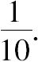
在这里证人所证实的观察到的事件是抽取的数字为79.这个事件可以从以下两个假设中得出，即：证人说的是真话或者说的是假话．根据已讨论的关于从发生的事件推出的原因的概率的原理，必须首先在每一个假设下确定这个事件的先验概率．首先，证人宣称数字79的概率是这个数字自身被抽到的概率，也就是说是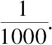
必须用证人讲真话的概率和它相乘，即用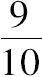
和它相乘，就会得到在这个假设下所观察到的事件的概率是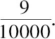
如果证人撒谎，数字79没有被抽取到，那么这个事件的概率是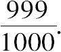
但是为了宣称取到这个数字，这个证人必须从999个没有被取到的数字里选择它，正如我们所假设的，他没有偏爱某些数字胜于其他数字的动机，那么，他将选取数字79的概率是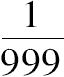
，然后，将其和前面叙述的概率相乘，就会得出在第二个假设下证人宣称抽取数字是79的概率是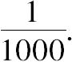
再次必须用第二个假设本身的概率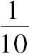
和这个概率相乘，就会得出在这个假设之下这个事件的概率是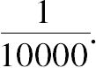
现在，假如我们设立一个分数，它的分子是和第一次假设下的概率，它的分母是两次假设下的概率之和．根据第六原理，我们将得出第一个假设的概率，这个概率是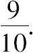
也就是说，等于证人说的是真的概率，同时也是数字79被取出的概率．证人说谎的概率和这个数字没有被取出的概率是
假如这个证人对于从没有取出的数中选取79会获得某种好处，他就会要说谎——例如，他正在裁判基于这个数的一场赌注相当大的赌局，抽到这个数的宣告将增加他的荣誉．那么，他选择这个数字的概率将不再是最初的，而将是、
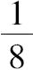
等等，这会根据他从这个抽取结果中所获得的利益而定．假设这个概率是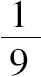
，必须将这个分数乘以概率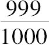
，以便得到在他说谎的假设下所观察到的事件的概率，这仍然必须乘以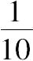
，于是就得出在第二个假设下事件的概率是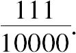
那么，第一个假设的概率，或者说抽取数字79的概率，由前述的原理，就会降低到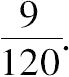
因此，因为证人可能从抽取数字79这个结果中所获得的巨大的利益，这个概率被大大地降低了．实际上，如果取出的数字是79，证人将如实说出这个事实，那么，相同的利益会使得这个概率增加到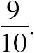
不过，这个概率不能超过单位1或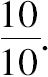
那么，取出数字79的概率将不会超过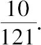
常识告诉我们，该利益引起了人们的不信任，但是计算可以评估它的影响．由证人宣布的这个数字的先验概率是数字1被瓮中所有数字的个数所除，借助于证据可以将它转化为证人的实际的诚实度（或可靠度），那么，这个先验概率会因为证据而降低．例如，假设这个瓮里只有两个数字，那么抽取数字1的先验概率被认为是1/2，假设宣布这个结果的证人的诚实度是4/10，那么这个结果的可能性就比较小了．实际上，因为证人更倾向于谎言而不是说出真相，很显然，他的证言就降低了他每次给予见证的事实的概率，这个概率或者等于或者大于1/2.如果瓮里有三个数字，抽取数字1的先验概率就会因其真实性超过1/3的证人的证实而增加．
现在，假设那个瓮里含有999个黑球和一个白球．有一个球已被取出来，证人宣布抽取的是白球．如同先前提到的问题，在第一种假设下，观察到的事件的先验概率等于9/10000.但是，在证人说谎的假设下，没有取出白球，这个情形的概率是999/1000.必须将它乘以说谎的概率1/10，由此得出在第二种假设下所见事件的概率为999/10000.在先前提到的问题中，这个概率只是1/10000.这个极大的差异是由以下情况导致的——一个黑球已被取出，想要撒谎的证人，为了宣称取出的是白球，他在未取出的999个黑球中没有一点选择的余地．现在，如果构造两个分数，其分子是每一个假设的相对概率，其公分母是这些概率之和．就会得，如果取出的是白球的，那么第一个假设的概率是9/1008，如果取出的是黑球的，那么第二个假设的概率是999/1008.第二个概率非常接近确定性．如果这个壶里有一百万个球，其中只有一个白球，最后的概率将会变成999999/1000008，它更加趋近于1，那么取出白球的概率就变得更加不同寻常地小了．由此可见，说谎的概率是怎样随着事实的反常性而增加的．
到目前为止，我们已经假设证人完全没出错．然而，假如承认他可能出错，反常的意外事件就变得更加不可能．那么，可以用以下四种假设替代两个假设：证人没有撒谎并且证人一点也没有出错；证人绝对没有撒谎但是证人出错；证人撒谎并且证人出错；最后，证人撒谎并且证人没有出错．在每一个假设中，都确定了被观察到的事件的先验概率，根据第六原理，我们发现，要证明的事件是假的概率等于这样一个分数，其分子是瓮中黑球的个数乘以证人没有撒谎但证人出错的概率与证人撒谎但证人没有出错的概率之和，其分母是这个分子加上证人没有撒谎也没有出错与证人既撒谎又出错的概率之和．由此可以看到，如果瓮中的黑球数量非常多，那么，取出白球就是非常渺茫的反常事件，要被证实为假的事件的概率就更加接近于确定性．
将这个结论应用于由此导致的所有反常事件中，就会发现证人出错或者撒谎的概率会随着要证实的事实更加的反常而变得更大．有些学者已经提出相反的观点，他们基于这样的观点：一个反常的事实非常相似于一个常规的事实，同样的出发点应该让我们给予证人相同的信任，当这位证人为这些或那些事件作证时．简单的常识不会接受一个如此离奇的断言．概率的演算，尽管对一些常识的结论可以确认，但它能够使人认识到关于反常事件的证言的最大不可能性．
那些学者坚持并假设有两个证人都是同等值得信任的，第一个证人声称他看到某人在15天前死了，而第二个证人却声称昨天他还看到同一个人活泼健壮．这些事件中的这个或那个情景不会被当作不可能的．但这些证言并不能直接使我们得到这个结果，对于具体事件的保留意见取决于将它们（的证言）联系起来的结果，尽管这些证言的可信度不应该因其联合结果的反常而被降低．
但是，如果将这些由证言联合在一起而导致的结论是不可能的，其中之一必须是假的；一个不可能的结果是反常结果的极限，正如错误是不可能结果的极限一样．在不可能的结果中，证言的价值变得一文不值，那么在一个反常结果的情形下，证言的价值也就必定被极大地降低了．这一点的的确确为概率的演算所证明．
为了通俗易懂起见，让我们想象有两个瓮，A和B，其中第一个瓮里有一百万个白球，其第二个瓮里有一百万个黑球．从其中一个瓮里抽取一个球，然后把这个球放到另一个瓮里，接着从这个瓮里再取出一个球．有两位证人，一位监视第一次抽取，一位监视第二次抽取．这两个证人都证明说他们看到取出的球是白色的，但没有说明是从那个瓮里取出的．如果单独查看，每一个证言并非是不可能的，也容易看出要证明的事实的概率正是证人的诚实度．但是，如果将这些证言结合起来考虑，它遵从以下的分析：第一次抽取的结果是从A瓮中取出一个白球，然后将它放入B瓮中，它在第二次抽取中又重新出现，这是极其反常的；因为对于第二个瓮，它只是在一百万个黑球中包含一个白球，取到白球的概率是1/1000001.为了确定由两个证人宣布的事情的概率上的减少，我们应该注意，观察到的事件在这里就是每一个证人的所作的证言——他已经看到一只白球被取出．令9/10表示他所说是真的概率，这种情况只能在证人不撒谎并且他绝对没有出错，以及他撒谎了但同时他又出错的时候下才能发生．我们可以设想以下四种假设．
第一，第一位和第二位证人说的都是真话．那么，第一次从A瓮里取出白球，这个事件的概率是1/2.因为，第一次被取出的球既可能从一个瓮里取出也可能从另一个瓮里取出．那么，这个球又被放入B瓮里，在第二次抽取中又被取出来，这个事件的概率是1/1000001，所宣布事实的概率是1/2000002.用1/2000002分别乘以两个证人说真话的概率9/10和9/10，就会得出在第一个假设中，所观察到的事件的概率是81/200000200.
第二，第一位证人说的是真话而第二位证人说的不是真话，或者是因为他撒谎和没有出错，或者是因为他没有撒谎但是出错．第一次抽取从A瓮里取出一只白球，这个事件的概率是1/2，将这个白球被放入B瓮里，然后从B瓮里取出一只黑球：这个事件的概率是1000000/1000001.那么，这个复合事情的概率是1000000/2000002.用1000000/2000002乘以第一个证人说真话的概率9/10和第二位证人不说真话的概率1/10之积，就会得出在第二个假设下所看到的事件的概率是9000000/200000200.
第三，第一位证人没有说真话并且第二位证人说真话．第一次从B瓮里取出来的是一个黑球，然后将之放入A瓮，从A瓮中再取出一个白球．第一次取出黑球的概率是1/2，第二次取出白球的概率是1000000/1000001.因此，复合事件的概率就是1000000/2000002.用1000000/2000002乘以第一位证人不说真话的概率1/10和第二位证人说真话的概率9/10之积，就会得出在这个假设下所看到的事件的概率是9000000/200000200.
第四，最后一种情况，两位证人都没有说真话．第一次从B瓮里取出一只黑球，将之放入A瓮，第二次从A瓮取出来的还是一个黑球．这个复合事件的概率是1/2000002.用1/2000002乘以每位见证人都没有说真话的概率1/10与1/10之积，就会得出在这种假设下所看到事件的概率是1/200000200.
现在，为了得出由两位证人所宣布的事件的概率，即：每一次抽取都取出一只白球的概率．我们必须用四种假设下相应的概率之和去除第一个假设下的（所见事件的）概率．这样我们就得到这个概率是81/18000082，它是一个非常小的分数．
如果两位证人断言，第一次从A瓮或B瓮中取出的是白球，第二次同样地从A'瓮或B'瓮中取出的是白球，非常相似于第一次．由两位证人所宣称事件的概率将是他们证言的概率之积，即81/100，这至少比前述的概率大180000倍．通过这种分析可以看到，在第一种情况下，第二次重复取到第一次取出的白球，两个证言的这个反常结果弱化了其价值．
我们不会相信这样一个人的证言，他告诉我们把一百个骰子掷到空中，所有的骰子落下后都是同一面朝上，如果我们自己亲眼看见了这个事件，只有当我们仔细检查了周围所有的环境，以及参考了其他人的证词之后，目的是非常确定这既不是幻觉也不是欺骗，我们才能相信自己的眼睛．在这个检验之后，我们就不应该再犹豫不决地接受这个事实，尽管这是极其不可能的．为了解释这个实验，没有人会被迷惑到去重新做一次实验来否定视觉的原理．可以从这里得出结论：对我们而言，自然规律恒定性的概率远远大于所讨论事件事实上并没有发生的概率——即使这个概率也要大于被认为是毋庸置疑的大部分历史事实的概率．由此，我们可以对使得自然规律暂停运作所需证据的巨大权重进行估算，把一般的评判法则应用于这种情形是多么的不合常规啊！那些没有提供足够数量的证据，只是通过与这些规律相反的事件报告，就支持宣称它们的人实际上是削弱而不是加强了他们希求激发的信念．因为在这种情形下，那些引述很可能出现其作者要么撒谎要么出错的情况．但是，相对于受过良好教育的人，未受过教育的人往往会更多地发生削弱信念的情况，因为未经启蒙之人总是渴望获得稀奇玄妙的结果．
有些事情是如此的反常，以至于没有什么可以与它们的不可能性相匹配．但是，由于占主导优势的观念的影响，这些不可能性被削弱到了看起来比证言的概率还要低的程度，并且，当这个观念开始发生变化时，一个十分荒谬的传闻在其产生的那个世纪一致被人们接受，而这个传闻为下一个世纪只是提供了公共舆论对杰出人物极端影响的一个新证据．路易十四时代的两个伟大的人物——拉辛和帕斯卡是这方面的突出例子．非常令人惋惜地是，文质彬彬的拉辛，这位令人钦佩的人类心灵的描绘者和有史以来的最完美的诗人，也宣称皮埃尔小姐的康复是一个奇迹，皮埃尔是帕斯卡的外甥女，波尔．罗亚尔修道院的走读修女．非常令人遗憾的是读到帕斯卡借助一些推理试图证明这种奇迹对宗教来说是必不可少的，目的是为这个修道院的僧侣和修女们的教义辩护，在那个时侯，这个教派（指詹森主义教派）的教义正受到耶稣会的迫害．三年半以来，年轻的皮埃尔备受泪管瘘的折磨，她用一个被认为是耶稣基督荆冠上的一根刺触摸她那只痛苦的眼睛，她的眼睛立刻被治愈了．几天后，内科医生和外科医生均证明她已痊愈，他们宣称，自然方式和医学治疗都没有在她的这次康复中起任何作用．这个发生在1656年的事件引起了巨大的轰动．拉辛说：“所有的巴黎人都涌入波尔．罗亚尔修道院，人群日益激增，通过在这座修道院里发生的一些不可思议的奇迹，上帝自己似乎也沉浸在其权柄彰显于虔诚的子民身上的喜乐之中．”在这个时候，奇迹和魔法还没有显示出不可能性，人们会毫不犹豫地将不能用其他方式解释的奇异自然现象归功于它们．
在路易十四时期最引人瞩目的著作中可以发现这种审视反常结果的方式．甚至哲学家洛克在他的著作《人类理解论》中，在“同意的各种等级”中说：“普通的经验和日常的事情，对人心虽然有很大的影响，使他们在听到任何要他们信仰的事物时表示信任和怀疑，不过在一种情形下，一种事情并不能因其奇特就使我们不同意于人所给予它的公平证据．上帝在任何时候认为这一类超自然的事件符合他的意图，他就有权利改变自然的进程．在那些情形下，那些事件和平常的观察愈相反，愈应得到人的信仰．”证言概率的真正法则已经被哲学家们误解了，理性获得的进步主要归功于他们，我认为必须详细地介绍关于这个重要议题的一些演算结果．
在这种背景下，就自然地展开了对于帕斯卡提出的著名论证的争论，[30]这个论证由英国的一位数学家克雷格用一种数学的形式重新再现出来．一些见证人宣称他们拥有它是基于神赐予的权柄，如果一个人遵此行事，他将获得永恒的祝福，而不只是充满欢愉的一生或两世．无论这些证据的概率多么微弱，只要不是无限小，很显然，那些遵从（上帝）规则的人的优势（期望）是无限的，因为它是这个概率与无限利益的乘积．因此，为了自己他就应该毫不犹豫地争取获得这个优势．
这个论证是建立在奉上帝之名的见证人所许诺的无数个幸福生命之上的．必须按照他们的要求去做，精确地说是因为他们夸耀的承诺超出了一切的有限，这是一个与常识相矛盾的结果．更进一步，（概率）演算向我们展示了这个夸张的说法自身在某种程度上削弱了其见证人的证言的概率，使其变得无限地小或者为零．实际上，这个案例相似于以下例子：从一个包含大量数的瓮中只取一个数，一个证人宣布取出来的是一个最大的数，因为这个宣称，该证人将拥有巨大利益．你已经明白了这个利益是如何极大地削弱了见证人的证言（的可信度）.我们仅仅以1/2来估计他抽出最大数的概率，如果证人撒谎，演算会使我们得到他的宣称的概率比这样一个分数要小，这个分数的分子是1，分母是1加上被先验地假定为一个谎言的概率与单独宣称的概率之乘积的一半．为了把这个案例与帕斯卡的论证相比较，足可以用瓮中所有数的个数来表示所有可能的幸福生命的数目，这些数的个数是无限的，请注意，如果见证人撒谎，他们将会由于许诺永恒的幸福而获得最大的利益以奖赏他们的谎言．这样，他们证言的概率的表达式就会变得无限地小．将它乘以所许诺的幸福生命的无限个数，无限性将会从表示这个优势的表达式中消失，该优势源自于这个许诺，这样就彻底推翻了帕斯卡的论证．
基于已建立的事实，现在让我们来考虑几种证言的联合概率．为了符合我们的观点，让我们来设想这样一个事实：从含有一百个数的瓮里取出一个数，并且取出的是一个单独的数．两个证人宣布这次抽取的数是2，求两个证言联合的概率．有人可能会给出这样的两个假设：这两个证人说真话；这两个证人说假话．在第一个假设下，取出数2这样一个事件的概率是
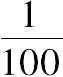
．必须将这个概率乘以两个证人的可靠度之积，我们假设两个证人的可靠度分别是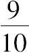
和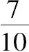
．那么就会得到，在这个假设下观察到的事件的概率是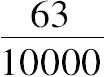
．在第二个假设下，没有取出数2这个事件的概率是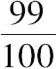
．这样，为了欺骗人们，两个证人必须一致从99个没有被取出的数中选择数2：如果两个证人没有一个秘密协议的话，那么这个选择的概率是分数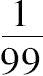
与自己的乘积．然后必须将这两个概率一起相乘，再乘以两个证人说谎的概率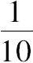
和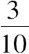
，得到在第二个假设下所观察到事件的概率是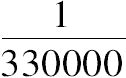
．现在，将第一个假设的相对概率被两个假设的相对概率之和所除，就得到要被证实的事件的概率，或者说数2被取出的概率，这个概率等于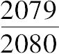
，没有取出这个数并且证人说谎的概率将是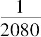
．如果这个瓮里只含有数字1和2，我们将发现以同样的方式可以求出数字2被取出的概率是21/22，相应地，证人撒谎的概率是1/22.这是比前述概率至少大94倍的一个概率．通过这个分析可以看到，当证人要佐证的事实本身的可能性在减小时，证人撒谎的概率是如何减小的．事实上，当证人撒谎时，证言达成一致是比较困难的，至少当他们没有一个秘密协议时，我们在这里不作这个假设．
在上述情况中，瓮中只有两个数，要被证实的事实的先验概率是
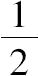
，从证言中导出的概率就是两个证人说实话的概率之积被这个积与证人各自说谎的概率乘积的和所除．现在，我们要考虑时间对由传统的证人链所转达事实的概率的影响．有一点是清楚的无疑的，即概率应该随着这个链条的延长而减小．如果这个事实自身没有发生的可能，例如，从含有无限个数的瓮里取出一个数，通过证言获得的这个事实的概率随着证人可靠度的连续乘积而降低．如果这个事实有可能发生，例如，从一个含有无限个数的瓮中取出一个单独的数且取出的数是2.由传统的证人链条所得到的这个概率会随着持续延长的乘积而减小，其中的第一个因子是瓮中数的个数减1与同一个数之比，其他的每一个因子是每一个见证人的可靠度，这个值则随着他说假话的概率与瓮中数的个数之比而减小．所以这个事件的概率的极限被认为是先验的或独立于证言的事件的概率，这个概率等于1被瓮中数的个数所除．
时间的作用会持续地减弱历史事实的概率，正如时间能够使最经久不朽的纪念碑发生改变．的确，可以通过夸大或保留支撑它们的证言和碑文来减弱它．印刷在这方面提供了一个伟大的方法，不幸的是古人却对此一无所知．尽管它拥有无限的优势，但是，通常袭扰世界的自然的和道德的巨变（革命）终将随着不可抗拒的时间的影响归于终结，在上千年的时间里，对一些历史事件的怀疑在今天却以最大的确定性而被认识．
克雷格曾试图将基督宗教证据的逐渐弱化划归于计算，他假设：当这个宗教不再（被认为）是可能的时候，这个世界也应该走到了末日．他发现，从他写作的时间算起，这个世界应该还会持续1454年．但是，他的分析和他对世界持续时间的假设同样是完全错误的．
一个团体决定的概率取决于相对多数的投票、其组成人员的智慧和公正．对这个概率产生影响的因素繁杂多样，包括复杂的情感和众多的利害关系，这种状况使得完全将之划归于计算似乎是不可能的，虽然，也会有一些由简单的常识所揭示并经由演算所证实的一般结果．例如，如果团体对于要付诸决策的问题的信息所知甚少，如果这个问题需要深思熟虑，如果关于这方面的真理与人们已有的认识相矛盾，由此可以预测：每一位投票人出错的可能性会超过1比1，即出错的可能性大于0.5.所以，大多数人的决定很可能是错的，并且如果这个团体的人数越多，出现这种情况的可能性就越大．因此，对于公共事务，重要的是团体应务必在大多数人理解的限度内对这些问题做出决定，非常重要的是，应当让信息广泛传播，并用建立在理性和经验基础上的善举去教化那些人（的君主们），他们蒙召为其众多的追随者做出决策并对他们进行统治管理，要预先告诫他们防止错误的观念和无知的偏见．学者们已经认识到先入之见常常具有欺骗性，真理并不总是可能认识到的．
在成员众说纷纭的情况下，要理解和确定这个团体的心声是困难的．通过考察两个最普通的案例，让我们尝试给出关于这个方面的一些规则：从几个候选人中做出选择，或从与同一个议题有关的提议中做出选择．
当一个团体必须从自愿竞选一个或几个同类职位的若干个候选人中做出选择时，似乎最简单的方式是让每一个投票人在选票上根据所有候选人对其贡献的价值顺序写出候选人的名字．假设他本着诚信的原则把他们进行分类，仔细查看选票，对所有候选人的各个方面进行比较，通过这种方式给出选举结果。如果仅此而言，这种选举并没有给出更多的信息。现在有一个问题是：怎样为选票上的候选人确立一个先后的顺序．让我们想象一下，把一个装有无数个球的瓮发给每一位投票者，他借此就能够列出所有候选人的资质等级．让我们再想象一下，投票人从瓮里取出若干个球，这个数目与每一个候选人的资质成正比，再假设这个数字写在选票上标有候选人名字的那一面．显然将选票上对应于每一个候选人的数相加，所有候选人中拥有最大和的一位就是这个团体所倾向的候选人．一般来说，候选人的先后顺序就是与他们每一位相对应的数字之和的顺序．但是，选票上并没有标出每一个投票人赋予候选人的球的数目：他们唯一能指出的是第一位候选人比第二位的多，第二位比第三位的多，以此类推．那么，首先，假设第一位候选人在一张给定的选票上得到某确定的球数，所有满足前述条件的较小的组合数是同样值得采纳的，那么就可以通过以下方法得到对应于每一个候选人的球数：求出每一个组合赋予他的所有数目的和，再用所有组合的数除之．一个非常简单的分析表明：这些必须写在每张选票上有姓名的那一边的数，从最后一名开始、倒数第二名，一个接一个，与算术级数1，2，3，等等的项成比例．因此，在每张选票上写上这个级数的一些项，在这些选票上将每一个候选人的项相加，形形色色的和的大小表示候选人之间的先后的顺序就被建立起来了．这是一个由概率论表示的选举模式．如果每一位投票人在选票上以候选人对其贡献的价值大小的顺序写下候选人的名字，我们就无须怀疑这个模式的优越性．但是一些特殊的利益和许多对于资质的奇怪考虑会对这个顺序产生影响，有时候对于其所倾向的候选人产生最大威胁的人被放置在最后的位置上，正是这一点给予资质平庸的一些候选人以太多的优势．所以，在已经采纳了这个模式的一些社团中，经验使得这种选举模式被弃而不用了．
通过绝对多数赞同票的选举将与最能够表达这个团体愿望的优势与排除多数人拒绝接受的候选人的确定性结合在一起．当只有两位候选人的时候，它与前述的模式是相符合的．实际上，这会使得团体陷于持续过长的选举的麻烦之中．但经验表明，这种麻烦从未出现过，而且希望选举不久就结束的普遍愿望会团结大多数的赞成票投向某一位候选人．
相似地，从与同一个议题有关的提议中进行的选择应该受制于与从几位候选人中进行选举的相同法则．但是，在两种情形下也存在差别，即—个候选人的资质与其竞争者的资质是不互相排斥的．但是，如果必须从相互矛盾的提议中进行选择，那么一个提议的真理性是与其他提议的真理性相互排斥的．下面就让我们来看一看应该如何考虑这个问题．
给每一位投票人一个装有无数个球的瓮．让我们设想一下，投票人根据他赋予这些提议的各自概率，将它们分配给不同的提议．显然球的总数体现出确定性．在这个假设下，投票人可以确信的是那些提议之一应该是真的，他要统筹地把这个数分配给这些提议．那么，这个问题就划归为求出以这样一种方式分配这些球的组合数：在选票上赋予第一个提议的数要大于第二个，赋予第二个的要大于第三个，以此类推，在各种组合中，求出相应于每一个提议的所有的球数之和，再将组合数除之，这些商就是投票人分配给某个选票上的一些提议的球数．通过分析发现，从最后一个提议开始，倒推至第一个，这些商之间有着与下述量之间同样的比率：首先，1被这些提议数所除；其次，前面的量加上1，被比这些提议数小1的数所除；第三，第二量个加上1，被比这些提议数小2的数所除，以此类推可以得到其他的量．这些数被写在对应于这些提议的每一张选票上，若果将关于每一个提议的分布在各种选票上的数相加，那么，根据其大小，这些和将表示出团体赋予这些提议的优先次序．
现在，我们来谈一谈团体的更新问题，总体上，团体在一定的年限上应当有所改变．这个更新应该一次完成？还是将之分布到这些年份里有利？哪一种更有利？根据后面的方式，团体的形成将会受到在其更新期间各种占主导地位的观点的影响，所采纳的观点很可能是所有观点的折中．将团体成员的选举推广到它所代表的区域的所有部分会给出其优势性，团体将因此而适时地体验到这种相同的优势．现在，如果考虑到经验已经传授给人们的是唯一清楚的，即，在最大程度上选举总是由占主导地位的观点所引导的，你将会感觉到，通过局部更新的方式缓解彼此相左的一些观点是多么的有效!
分析学证实了我们业已知道的简单常识，也就是：法官的人数越多，他们所受的教育越好，就越有可能达到判决的正确性．重要的是法庭上诉应该满足两个条件．试图将这个问题更紧密地引入到其裁判权的下级法院为上级法院提供了其可能性已得到认可的一审判决的优势地位，后者往往同意一审的判决，或者令其和解或者中止他们的诉讼．但是，如果在诉讼中事情的不确定性及其重要性使得诉讼当事人必须求助于上诉法庭，为了获得一个公正判决的较大概率，那么，对于其财产和困扰的补偿以及新程序必需的花费，他应该努力获得较大的安全保障．这一点在地区法院的相互上诉的制度中并没有引起任何关注，因此，这是一个严重损害公民利益的制度．或许合适的且令人满意的是，在上诉法院里，为了推翻下级法院的判决，根据概率的演算，要求至少超过两票的多数．由此可以得到这样一个结果：如果上诉法庭是由偶数个法官组成的，那么在支持和反对票数相同情况下的判决就可以成立．
我将着重于考查刑事案件中的判决．
毋庸置疑，为了证明一个被告有罪，法官必须掌握其犯罪的有力证据．但是，一种道德论证绝不会优于一种概率（论证），经验已向我们清楚地表明，刑事判决的错误，即使那些似乎是最公正的判决，也仍然容易受到道德论证的影响．弥补这些错误的不可能性是那些希望废除死刑的哲学家们最强有力的论证．如果对我们来说必须等待数学的证据，那么我们就不得不放弃审判．但是这种判决也面临着罪犯得以免除刑罚的危险，如果我没有错误的话，这个判决就划归为以下问题的解决：如果一个人有罪而被宣判无罪，人们必定会有这样的担忧：他会再犯新罪行吗？那些预谋但有所顾虑的家伙会从这个刑罚免除的案例中受到鼓舞吗？与此相比，人们或许更为担心的是以下这种情况：如果被告无罪但被控有罪，而他犯罪的证据具有足够大的概率，使得公民没有什么理由去怀疑法院判决有误．这个问题的解决需要依赖于几个非常难以确定的因素．如果犯刑事罪的被告未受处罚，其后果是给社会带来巨大的危险．有时，危险太大，以至于地方法官发现不得不放弃那些为了保护无辜者而建立起来的程序方法．但是，使得眼下讨论的问题不能解决的（关键）是不能够估计犯罪的概率以及确定被告有罪所需要的概率．在这个方面，每一个法官不得不依靠自己的感觉．通过将与犯罪行为有关的多种证言和因素与他思考的结果和经验相比较，形成自己的观点，在这方面，如果在通常相互矛盾的环境中确定真相，长期形成的审问和鉴定被告人的习惯会显示出很大的优势．
上述问题再次依赖于犯罪审查中所采取的刑罚的轻重．因为人自然地对判处死刑比对给予几个月的拘禁需要更有力的证据．这就是为什么刑罚应量刑而定，因为对一个轻微的犯罪施加一个严厉的刑罚就不可避免地导致产生许多有罪之人，犯罪的概率与其严重性之积是对危险的衡量，对罪犯的开释可能会将社会置于这种危险之中，人们可能认为刑罚（的制定）应依据这个概率．这一点在法院里已间接地实行了，当有非常强的证据指证被告在现场，那么他就要被羁押一段时间，尽管这些证据还不足以证明他有罪．寄希望于获得新的信息，法院不会立刻将他交还给他的乡亲们，他们再次见到他时会带有很大的警觉．但是，这种衡量的随意性以及可能的对其滥用已经导致在一些国家中人们对它的排斥，在这些国家里，个体的自由被赋予最高的价值．
现在，一个法庭的判决是公正的概率是多少呢？这个判决只有给定的大多数通过才能作出，也就是说，与上面提出的问题的真正解法相一致？这是一个重要问题，如果能被很好地解决了，将会提供不同法院之间的一些比较方法．在许多法庭上，超过一票的多数意味着正在讨论的事情是非常值得怀疑的，在这种情形下判处被告有罪是与保护无辜人的法则背道而驰的．法官的一致性会使一个公正判决的概率非常大．但是，如果法院只限于这一点，很多有罪之人就会被释放．那么，如果希望他们是一致的，需要限制法官的人数，或者当审判团的人数更加庞大时，需要增加判决有罪所需的多数．我将尝试把计算应用于这个问题中，当人将其建立在常识向我们提供的数据基础之上时，说服人们相信它总是一个最好的向导．
假设每一位法官的观点都是公平的，将这个（假设的）概率作为主要的因素纳入到计算中．如果在一个有一千零一个法官的法庭上，五百零一人持有一种相同的观点，其他五百人则持有相反的观点，显然每一位法官的观点的概率稍微超过1/2.因为如果假设它很明显地大，那么单独一票的差异几乎是一个不可能的事件．但是，如果法官的意见是一致的，这就显示了基于这些证据而定罪的强度，那么每一法官的观点的概率就非常接近1或者确定性，只要感情和通常的偏见不同时影响所有的法官．除这些情况以外，这个概率应该由赞同和反对被告的票数的比例单独决定．因此，可以假设这个概率的变化范围是从1/2到1，但是它不能小于1/2.如果不是如此，那么法庭的判决就像偶然事件一样毫无意义了，它所具有的唯一价值就是法官的观点对于真理而不是谬误有更强的追求倾向．通过赞同与反对被告的票数的比例，我求出了这个观点的概率．
这些资料足以确定由一个已知的多数来判断法院判决是公正的概率的一般表达式．在法庭上，其中八个法官中，需要有五票赞同被告有罪，在公正的判决中，人所担心的出错的概率会超过1/4.如果法庭把法官的人数减少到六人，那只需要超过四票的多数就可以判被告有罪，人所担心的出错的概率就会小于1/4，这样，对被告来说，法庭规模的减少是一个有利因素．在这两种情形下，所需要的多数是相同的并且都等于2.因此，如果这个多数保持不变，错判的概率会随着法官人数的增加而增加，这就是在一般情况下，无论所需的多数是什么，它必须保持不变．如果我们把这个算术比率作为一个法则，被告发现，随着法院规模的增加，他自己的优势就会越来越小．在英国，人们相信，在法庭上判被告有罪需要十二票的多数，不论法官的人数是多少，少数票和相同数目的多数票相抵消，剩余的12张票表示具有12位成员的陪审团的意见一致．但是，这么做可能会铸成大错．常识告诉我们，在拥有212名法官的法庭的判决与拥有12名法官的法庭上一致认同无罪的判决之间是有差别的，在前者中，112名法官宣判被告有罪，而其他100名法官要将被告无罪释放．在第一种情况下，赞成被告无罪的一百张票使人认识到证据还远没有达到判其有罪的程度，在第二种情形下，法官的一致通过会导致这样一种信念：的确已经达到这个程度．但是，简单的常识根本不能满足我们估计在两种情形下错判的概率之间的巨大差异．因此，必须求助于演算，由此会发现在第一种情形下错判的概率接近1/5，而在第二种情形下这个概率仅仅是1/8192，这个概率不及前者的1/1000.这是对当法官人数增加时，这个算术比率对被告不利这个法则的证实．相反，如果采取几何比率的规则，当法官人数增加时，法院错判的概率会减小．例如，在法院里，判决有罪只需要三分之二的票数通过，如果法官的人数是六人，令人担忧的错判的概率接近四分之一，如果法官的人数增加到十二人，那么错判的概率降低到七分之一以下．因此，如果你希望错判的概率既不大于也不小于某一给定的分数，那么你就应该既不被算术比率也不被几何比率所左右．
但是，应该选定什么样的分数呢？正是在这里，随意独断性开始滋生，法庭在在这方面提供了最大的变数．在特别的法庭上，8票中至少5票就足以判被告有罪，涉及审判的正义，令人担忧的错判的概率是65/256，大于1/4.这个分数的大小是触目惊心的．但是，考虑到以下情况我们应该得到一点些许的安慰，最通常的情况下，为被告开释的这个法官并不认为他是无罪的：他只是宣告没有充分的证据来给被告定罪．人尤其是很容易因为怜悯而消除内心的疑虑，这种怜悯是自然赋予人心的本性，它也使得心智很难从带到其面前等待判决的被告中识别出罪犯．这些情感更多地表现在那些不习惯于判断的人们身上，它们弥补了因为陪审员的经验缺乏而造成的麻烦．在一个有12个成员的陪审团里，如果判被告有罪所需要的多数是12票中的8票通过，那可能令人担忧的错判的概率是1093/8192，它比1/8更小一些，这个多数是12票中的9票通过，那错判的概率接近1/22.在一致通过的情况下，错判的概率是1/8192.也就是说，这个概率比我们的陪审团错判的概率小一千多倍．这一点意味着一致通过的判决只能产生于证据或者完全有利于或者完全不利于被告；但是，在达成一致的过程中常常会发生一些奇特无极的动因，当把一致的结果作为一个必要的条件强加给陪审团时．因为他们的判决会受到陪审员的性情、性格和个人习惯，以及陪审员所处的环境的影响，所以它们（即这些判决）有时与多数陪审团所作出的判决相反，如果他们只听信证据．在我看来这是这种判决方式的一个巨大的缺点．
在我们的陪审团中，判决概率的可靠性实在太低了，我认为，为了给无辜者一个充分的保障，所要求的多数应该是12人的陪审团中至少9票赞同．
构造死亡表的方法非常简单．可以从民事登记册上获取出生和死亡的人数．可以了解到有多少人在出生后第一年死去，多少人在第二年夭折，等等．从这些数字中，可以推出在每年之始活着的人数有多少，可以把这个数字记录在表中表示年龄的那一栏中．依此，把出生数记录在零岁的旁边，把达到一岁的婴儿数记录在1岁的旁边，把达到两岁的孩子记录写在2岁的旁边，其余的以此类推．但是，因为在生命的前两年死亡率非常高，为了更精确一些，在人生的第一年，在每半年末就必须注明生存者的数目．
如果我们将记录在死亡表上的所有个体的生命之和被这些个体的人数所除，就会得到对应于这个表的生命的平均持续时间．为了做到这一点，将半岁乘以第一年死亡的人数——这个数字等于写在零岁与1岁旁边的人数之差．他们的死亡率必须分布在一整年中，而其生命的平均持续时间只为半年．那么，将
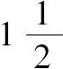
岁乘以第二年死亡的人数，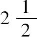
岁乘以第三年死亡的人数，以此类推．这些积之和被出生数所除就会给出生命的平均持续时间．从这里很容易得出结论：通过以下方法就会得到这个平均持续时间：求出在这个表格中每一岁旁边的数字之和，用出生数除之，这个商再减去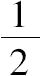
岁作为单位．那么从任何年龄开始，剩下的生命平均持续时间可以用同样的方式求出，从达到这个年龄的所有人数开始，就像对出生人数所作的那样．但是，并非从出生时刻算起，生命的平均持续时间就是最大的，正是此时婴儿期的危险被忽略了，这时的生命的平均持续时间为四十三岁．从一个给定的年龄起，活到某一年龄的概率等于表格中在这两个年龄旁记录的人数之比．这些数字的精确性需求非常庞大的出生数字用于表的制作．分析会给出一些非常简单的公式用以估计这些表中所记录的数字将在相距很近的极限之间偏离真值的概率．从这些公式中我们将会看到，随着所考察的出生数的增加，这些极限之间的间隔会减小，这个概率会增大．所以，如果所应用的出生人数变为无穷大时，死亡表将会精确地呈现出死亡率的真正规则．
所以，死亡表就是人类寿命的概率的一种表格．记录在每一年龄旁边的人数与出生数之比将是一个新生儿活到这个年龄的概率．以同样的方式，可以估计一个期望的值，将每一期望的获利与得到它的概率相乘，再将这些积相加，那么我们即可类似地估计出生命平均持续时间：将每一年龄与达到其开始和终结的概率之和的一半相乘，将这些积相加，由此可以导出上述发现的结果．但是，这种思考生命平均持续时间的方式在稳定的人口状态下具有一定的优势，即在出生数与死亡数相同的情况下，生命平均持续时间是人口数量与年出生人口的数量之比，因为，如果假设人口是稳定的，表中两个相继年龄之间的某一年龄的人数乘以达到这些年龄的概率之和的一半，那么所有的这些乘积之和就是全部的人口数．现在，容易看到，这个和被年出生数所除，与我们刚刚已经定义的生命平均持续时间是一致的．
借助于死亡表，很容易构造相应的假设为稳定的人口表．为此，我们求出死亡表中对应于年龄零岁，一岁，两岁，三岁等人数的算术平均数．所有这些平均数之和就是全部人口．把它写在零岁近旁．如果从这个和减去第一个平均数，余数就是一岁或更大年龄的人数，把它写在一岁的近旁，从这个余数中减去第二个平均值，第二个余数是两岁或者年龄更大的人数，把这个数写在二岁近旁，以此类推．
影响死亡率的可变原因如此之多，以至于表示死亡率的表格应该因时间和地点的不同而发生变化．在这方面各种各样的生命状态展现了关于与每种生命状态密切相连的灾难与风险的明确差别，必须以计算来考查它们，这种计算是建立在寿命基础上的．但是，人们还没有彻底地了解这些差别，不过，将来总有一天会达到这一点，那时我们就会知道每一行业需要付出怎样的生命代价，我们将受惠于使这些风险降低的知识．
土地的状况、海拔高度、气温、居民的习惯，以及政府的运作都对死亡率有着相当大的影响．但是，在对观察到的差别的原因进行考查之前，通常需要对显示出这个原因的概率进行研究．由此，在法国，我们已经看到人口与年出生数之比上升到了
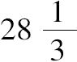
，这不同于古代米兰（Milan）公国的二十五，这两个比都建立在大量出生数的基础上，这些比值并不令人去质疑米兰人中死亡率的一个特殊原因的存在性，那种原因的调查与消除应该是那个国家的政府关心的事情．如果我们能够成功地减少和消除某些危险和广泛传播的疾病，人口与出生数之比将会进一步增加．对于天花，这一点已被成功地做到了．首先通过这种疾病的接种，然后，通过一种更加先进的方式，即疫苗接种，这是詹纳（Jenner）的发现，这个发现的价值是不可估量的，他因此而成为对人类贡献最大的人物之一．
天花有一个特点，同一个人不会被它感染两次，或者说至少这种情形非常少见，以至于在计算中这种情况可以忽略不计．在疫苗发明之前很少有人会躲过这种疾病，它通常是致命的，它会导致这种疾病的感染者
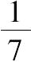
的人死亡．有时它比较轻微的，经验显示可以通过为健康的人预防接种而赋予它这种特点，通过适当的饮食并在适合的季节，要使接种的人对这种疾病有所准备．死于接种的人数与所有接种的人数之比不到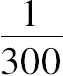
．接种的巨大优越性，再加上使人免于毁容以及使人们免遭天花带来的严重后果，使得接种被许多人所接受．有人强烈地呼吁使接种成为常规，但是又遇到强烈的反对声音，因为这几乎总是一件易于陷于麻烦的事情．在这场争论之中，丹尼尔．伯努利提出将接种对于平均寿命的影响化归于概率的演算．由于缺乏在生命的各个年龄阶段由天花所致死亡数的精确数据，他假设感染这种疾病的危险与死于这种疾病的危险在任何年龄都是相同的．在这些假设之下，再加上精致的分析，他成功地将一个一般的死亡表转化为一个如果没有天花或者如果天花只导致感染者非常小的死亡数的情况下也可用的表格，他从中得出结论：接种至少将平均寿命增加三年，这一点在他看来不容再怀疑接种实践的优越性．达朗贝尔反对伯努利的分析：首先是关于这两个假设的不确定性，其次是没有充分地对这一点进行分析，也就是把尽管非常小的即刻死于接种的风险，与比较大但比较遥远的死于自然感染天花的风险进行比较．当考察大量的个体时，这种思考就消失了，因为这个原因，这种思考就不关乎政府，对于他们来说，接种的优势还是存在的．但是，对于一家之主来说，这种情况是非常严重的，如果为他的孩子们接种，他必定担心看到这种情况：他最珍爱的一个孩子死亡并且是这个原因所致．许多父母被这种恐惧所束缚，幸运的是这种恐惧已被疫苗的发现驱散了．通过自然界如此频繁地向我们吐露的那些秘密之一，疫苗对天花的预防就像天花病毒一样确定，没有丝毫的危险．它不会使人感染任何疾病，并且只需要非常简单的护理即可．所以，它的应用立刻传播开来，并使它成为克服人类天然惰性的一个普适的方法，当涉及他们最切身的利益时，必须通过坚持不懈的努力克服这种惰性．计算消灭一种疾病所产生的好处的最简单方法包括：根据观察精确算出每年死于这种疾病的一个给定年龄的个体数量，并从同一年龄去世的人数中减去它．那么，如果这种疾病不存在的话，这个差与这一给定年龄的人口总数之比就是在这一年在这个年龄去世的概率．然后，将从出生到任何给定年龄的这些概率相加，再从1中减去这个和，余数就是活到那个年龄的概率，它受制于这种疾病的灭绝．这个概率序列将成为与这个假设有关的死亡表，经由以上的论述，我们可以从中得出生命的平均持续时间．这就是迪维拉尔（Duvillard）发现的平均寿命增加三岁归因于疫苗的接种这个结论的方法．（平均寿命）如此显著的增长将导致人口的大量增加，如果后者在其他方面不受到有关的生存供应衰减的抑制．
人口增长的停滞主要是由于生存供应的缺乏．在动物和植物的所有物种中，自然界不断地倾向于增加个体的数量直到达到平均的供应水平为止．在人类中，道德的原因对人口有着极大的影响．如果易于获得的森林空地能够为新生的一代提供丰富的营养，确定无疑地能够供养成员众多的大家庭，这样婚姻就会受到鼓励并且激励他们繁衍更多的后代．在同样的土地上，人口和出生数应该同时以几何级数增长．但是，当森林空地变得难以获得并且日渐稀少时，人口的增长就降低了．它持续地接近变化的供应状态，这个波动正如一个钟摆一样，其周期由变化的悬挂点所延迟，钟摆通过其自身的重量围绕这个点摆动．估计人口增长的最大值是困难的，经过一些观察之后，情况似乎是在适当的环境中人类的数量每十五年就翻一番．据估计，在北美这个翻番的周期是二十年．在这种状态下，人口、生育、婚姻、死亡率，所有这一切的增长都依据相同的几何级数，可以通过观察两个世纪的年出生数求出这个级数的相邻两项的公比．
死亡表代表了人的寿命的概率，借此，我们可以求出婚姻的持续时间．为了简化起见，假设对于两性来说死亡率是相同的．那么，婚姻将持续一年、两年、三年，或者更多年的概率可以由下列方法求出：构造一些分数的序列，其公分母是表格中对应于结婚伴侣的年龄的两个数之积，其分子是对应于这些年龄加一岁、二岁、三岁，和更大年岁的数的相继乘积．这些分数之和加上
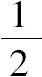
就是婚姻的平均持续时间，年为观测的单位．很容易将相同的法则推广到由三个或者更多个体组成的联合体的平均持续时间中去．在这里，让我们回忆一下已经论述过的期望．我们已经看到，为了求出几个简单事件所产生的收益，在这些事件中，一些事件导致获益，而另一些事件则造成亏损，就必须求出每一有利事件的概率与它所产生的收益之积的和，减去每一不利事件的概率与之相应的损失之积的和．但是，不管这些和之差所表述的收益是什么，由这些简单事件所复合而成的一个孤立的事件并不保证消除遭遇损失的担忧．不妨想象一下，这种担忧会随着这个复合事件的多次重复发生而有所减轻．概率的分析给出了如下的一般原理：
这个关于获益和损失的定理类似于那些我们已经讨论过的关于由无数次重复的简单事件或复合事件所显示的比的定理，像这些定理一样，它证明了规则性的存在，规则性甚至深藏于那些我们所称的最具偶然性的事物之中．
如果有许多的事件，分析学又一次给出收益值位于给定的极限之间的概率的非常简单的表达式，这个表达式包含在上述已经谈到的一般的概率原理中，这些原理与无限重复发生的事件概率有关．
建立在概率基础上的制度的稳定性依赖于前面所论述定理的真实性．但是，为了使其可应用于它们，那么以下做法就是必需的：这些制度应该通过对于大量事物的处理而增加有利事件的数量．
已经存在一些建立在人的寿命基础上的制度，比如像终身年金、唐提联合养老保险制度．最一般和最简单计算这些制度的收益和费用的方法在于将它们化简为实际的数额（当前的价值）.将一个单位（货币）的年利息称为利率．每年末的金额增长为乘以一个1加利率的因子，其金额的增长就依据其公比为这个因子的一个几何级数，因此，随着时间的进展，它会变得极其巨大．例如，如果利率是
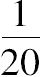
或者百分之五，资金在十四年左右几近是（本金的）两倍，二十九年则是四倍，将近三百年就是两百万倍还要多．如此巨大的增长已引发了这样一种想法：为了偿还公共债务应当充分利用它．为此，成立了一种专门用于偿还公众账务的年度基金的偿债基金，根据赎回金的利息，这种基金的数额会不断地增加．显然长期来看，这种基金将减轻大部分的国家债务．该贷款的一部分是专门用于增加年度偿债基金，公共债务的变化就会减小，放贷人的信心以及他们退休时毫无损失地收回贷出的资金的概率将会增加，
这就使得将来贷款的条件更加简单．令人满意的实践充分证实了这些预期．但是，忠诚于合约的程度和稳定性对于这样一些制度的成功是非常必要的，这些只有由政府来保证，政府中的立法权被分割成几种独立的权力，这些权力的必要合作所激发的信任又使国家的力量成倍加强了．统治者本人从法制中所获益的要大于在专制下所失去的．
从这里可以得出，当前的价值相当于只有在若干年数后才被支付的一个和，它等于这个和乘以到那时它将可以被支付的概率，再被1加利率的次幂所除，这个幂的次数等于年数．[31]
对于一个人或者多个人来说，很容易将这个法则应用于终身年金、银行存款以及任何性质的保险中．假设要根据一个给定的死亡表构造一个终身年金表，例如，每五年的末尾可以支付的一种年金，根据这个原理，可化简为一个实际的数额（当前的价值），它等于以下两个量的乘积，即，年费被1加利率的五次幂所除与支付它的概率相乘．这个概率是记录在支付年金的人的年龄旁边的人数与记录在该年龄加五岁的年龄旁边的人数之比的倒数．[32]那么，就形成了一系列的分数，其分母是死亡表中记录的活到支付年金之人的年龄的人数与1与利率之和的逐次的幂的乘积，其分子是年金与活到同一岁数相继加一岁，两岁，三岁等年龄的人数的乘积，这些分数之和就是关于那一年龄的终身年金所需要的数额．
假设某人想利用年金的形式在其死后这一年的年底保证将其可赔付的一笔资金传于他的继承人．为了计算这笔年金的价值，可以想象一下这个人生前从一银行中借了这笔钱，然后他将这笔钱以固定利息存入同一个银行．显然这笔数额将由银行在其死后这一年的年底付给其继承人，但是，他也必须每年返还年金利息超过固定利息的多余的数额．年金表将会显示出，为了保证该投保人死后的这笔资金，他每年应该支付给银行的数额是多少．
航海保险、火灾保险和风暴保险，以及通常的所有这类险种的设置，都以同样的原理来计算．一位拥有海上船只的商人希望确保它们的价值以及船上装载的货物的价值以防备可能遇到的风险，为了做到这一点，他会付给一个公司一笔钱，这个公司就会负责评估其船只与货物的价值．这个价值与保险费的比值取决于这些船只所经受的风险，可以通过对已经从港口出发到相同目的地的船只的命运的大量观察来估计出这个比值．
如果投保人只付给保险公司依概率计算出来的数额，这个保险公司就不能提供这个险种的费用，于是，他们应该付出比这个保险的花费大得多的费用就是必要的．那么，他们的优势是什么呢？正是在这里，就必须考虑与不确定性紧密相连的道德优势了．我们可以想象，正如我们已经看到的，因为参与者用一个确定的赌注去换取一个不确定的利益，所以，即使是最公平的游戏也会有其不利的一面，而在保险中，一个人用不确定性换取确定性，所以保险是有益的．的确，这一结论正是来自前面已经得出的关于求道德期望的法则，借此，还可以进一步看到为保险公司所做出的奉献是如何之大，如果一直维持着这种道德优势的话．在努力获取这个优势的过程中，保险公司就会得到不菲的收益，如果被保险人的数量巨大，这是公司继续生存的必要条件．因此，其收益就成为确定的，其数学的与道德的期望就一致了．分析学导出了这个一般的原理，即，如果很多的期望，两种期望就会不断地靠近，直到在无限多的情形下它们相同为止．
说起数学期望和道德期望，我们已经说过将期望的收益分成为几个部分收益．因此，为了将一笔钱运输到遥远的港口，那么，将它放在几条船上比将之全部放在一条船上要好，这就是互助保险所做的事情．有两个人，每人将相同的金额放在两艘从同一港口驶往同一目的地的不同的船上，如果他们达成协议平均分配能够运到的所有的钱，显而易见的是，根据这个协议他们每人将公平地分到他所期望的同在两艘船上的数额．实际上，这种类型的保险通常会给人们留下害怕损失的忧虑．但是，这种忧虑会随着投保人的数量的增加而减少，道德优势增加得越来越多，最终以与其数学优势的一致而结束，数学优势是其自然的极限．对于被保险人来说，当互助保险协会的人数众多时，这一点使得互助保险协会比保险公司具有更大的优势，保险公司根据他们所获利的推理，总是给出一个比数学优势更小的道德优势．但是，他们的监督管理抵消了互助保险协会的优势．正如我们所见，所有的这些结果是独立于表示道德优势的法律的．
你可以将一个自由的民族看作一个大的协会，其中的成员相互保护他们的财产，并按比例支付这个保障的费用．几个民族的联盟将会给予它们类似于每一个个体从协会中所得到的优势，他们的代表大会要讨论公共利益的问题．毋庸置疑，由法国科学家们提出的重量、度量以及货币的系统，在这样的大会上，会作为最有用于商业关系的事情而被采纳．
在建立在人的寿命概率基础上的制度中，比较好的制度是那些通过付出其收入的一小部分，就可以在他担心不能够满足其需求时的一段时间里确保其生存以及其全家的生存．就赌博是非道德的这个方面而言，到目前为止的这些制度对于形成良好的习俗是有利的，它们使人们的天然倾向中的最好的一面凸显出来．那么，政府就应该在公共财富的兴衰变迁中鼓励和尊重它们，因为它们呈现出的希望在于遥远的将来，只有规避了其生存期间的所有焦虑之时，它们才能够兴盛繁荣起来．这就是一个代议制政府（representative government）的制度确保人们（幸福）的一个有利之处．
现在谈一谈关于贷款的问题．为了能够终身地借贷，每年必须支付所借资金与利率的乘积．但是，你可能希望在一定的年数之内分成相同的几期付款来还清这笔本金，这些付款被称为年金，它的值可以通过以下方法获得：为了将每一笔年金化为一个实际的数额，每一笔年金必须被1加利率的n次幂所除，其中n等于在一定年数之后支付这笔年金的年数．以这种方式构造一个几何级数，其首项是年金被1加利率所除，其最后一项是年金被相同项的n次幂所除，其中n等于在其之间应支付这笔年金的年数．这个级数的和就等于所借资金，它将决定年金的值．归根结底，偿债基金只是将一个终生的租借转化为年金的一种手段，唯一的不同是，在用年金贷款的情形下，利率是固定不变的，而由偿债基金所得资金的利率却是变化的．如果在两种情形下利率是相同的，与所得收入对应的年金就由这些收入与每年政府付给基金的那笔收入所组成．
如果你想做一个终身贷款（方案），可以看到，年金表将会给出在任何年龄需要支付年金所需要的资本，一个简单的比例将会给出你应该付给从其处借钱之人的利率．从这些原理中所有可能种类的贷款都可以计算出来．
我们刚刚讨论过的关于制度设计的收益与损失的一些原理有助于确定任何次数的观察的平均结果，当你希望考虑对应于多次观察结果的偏差时．用x表示最小结果的修正，让x依次加上q，q'，q″，等，表示以下的结果．令e，e'，e″等表示观察的误差，假设这些误差的概率原理我们将会知晓．因为每次观察是结果的一个函数，显而易见，如果假设这个结果的修正值x非常小，那么第一次观察的误差e'将等于x与一个已经求出的系数的乘积，相似地，第二次观察的误差等于q加x的和与一个已经求出的系数相乘，以此类推．因为误差e的概率是由一个已知函数给出的，它可以由前述乘积的第一个的相同函数表示出来．e'的概率由这些乘积中的第二个的相同函数表述出来，其他的以此类推．那么，误差e，e'，e″同时存在的概率将与这些不同函数的乘积成比例，这个乘积将是x的函数．你可以想象一条横坐标为x、其对应的纵坐标是该乘积的曲线．那么这条曲线将表示x的不同的值的概率，其极限由误差e，e'，e″的极限所确定．现在，令X表示必须选择的一个横坐标，如果横坐标x是真正的修正值，那么X减去x就是所犯的误差．这个误差，乘以x的概率或者曲线的相应的纵坐标，就是损失与其概率的乘积，如果你将这个误差当作与选择X相关的损失．用x的微分乘以这个积，从这条曲线的左端点到X的积分就是由小于X的x的值所导致的X的弱势．对于大于X的x值，如果x是真正的修正值，那么x减X就是X的误差，x与相应曲线的纵坐标，以及x的微分的乘积的积分就将是由大于X的x值所导致的X的弱势，这个积分（的区间）是从x=X起到这条曲线的右端点．将这个弱势与前一个相加，这个和就是与选择X相关的弱势．这个选择应该由这个弱势是最小化的条件给出，一个非常简单的计算显示，为了达到这一点，应当取X为横坐标，其纵坐标将曲线分为相等的两部分，因此，正是以这样的一种方式，x的真值落入X的一边与落入另一边的可能性是相等的．
一些著名的几何学家们已经选择X作为x的最可能的值，作为一个相应的结果，已选择对应于曲线的最大纵坐标的值，但是，在我看来，前面的值确凿无疑地就是由概率论所表示出来的那一个．
心智（mind），就像视觉一样，也有其错觉，正如以感觉修正后者（视觉）的同样方式，深思熟虑和计算也可以修正前者（心智）.与一个只是简单计算结果的较大概率相比，基于日常经验的概率，或者说被恐惧和希望所夸大的概率对我们的影响更强大．因此，为了获取一些微薄的收益，我们完全不担忧将我们的生命置于一些风险之下，因为这些风险比在法国彩票中抽到一组五张同花顺的可能性还要小．然而，即使抽到一个同花顺的事情能够发生，人们也不会愿意用失去生命的确定性去获取同等大小的收益．
我们的情感、偏见和主流观念，通过夸大对其有利的概率以及淡化对其不利的概率，而成为危险错觉的丰富源泉．
目前的祸害以及引起它们的原因对我们的影响远大于对由相反原因所引起的祸害的回忆；它们妨碍了我们对两者的缺陷以及采取适当手段使人们避免这些缺陷的概率做出正确的评估．正是如此才导致一些国家脱离了和平稳定的轨道而陷入混乱和暴政交相发生的状态，只有经过一段漫长与残酷的暴乱之后，他们才会重新回到和平状态．
我们从当前发生的事件中所获得的强烈印象使我们几乎不可能注意到由他人所观察到的相反事件，这是谬误的主要原因，这些谬误是人们不能完全避免的．
在一些博彩游戏中，大量的错觉支撑着一个人的希望并在面对一些不利的偶然性时将这些希望维持下来．大多数参与彩票活动的人并不知道有多大的可能性对他们是有利的，有多大的可能性对他们是不利的．他们仅仅只是看到了用微小的赌注获得丰厚收益的可能性，他们的想象力所产生的图景将获得回报的夸大概率呈现在他们眼前，尤其是穷人会被获得一个更好命运的渴望所刺激，冒风险倾其所有押在赌博上，紧盯着那个最不利的组合，因为这个组合承诺他会获取丰厚的回报．如果他们了解这一点的话，毫无疑问，他们会为输掉的大量赌金而感到惊恐万分；然而恰恰相反，人们只关注大量赢钱的宣传报道，这成为人们为这种毁灭性的游戏而癫狂痴迷的新缘由．
当法国彩票中的一个号码很久都没有被抽到的时候，人们都如饥似渴地蜂拥而至押赌这个号码，他们判断的理由是：因为这个号码很久没有被抽到了，那么，下一次抽取这个号码被抽到的可能性要大于其他号码被抽到的可能性．在我看来，一种司空见惯的谬误是基于错觉，这种错觉会使一个人不知不觉地又转回到事件的源头上．例如，一个人在“掷正面-反面”的游戏中连续掷十次正面是不可能的，这种不可能性使我们相信在第十次将会掷出反面，事实上，在其已经发生了九次的时候已令我们惊讶不已了．但是过去的事情显示在掷硬币的游戏中正面比反面出现的可能性更大一些，这使得第一个事件比第二个事件出现的概率更大；当一个人在接下来的投掷过程中看到更多的正面出现时，这种印象就增加了．一个类似的错觉使得许多人相信通过每次都押在同一个号码上，直到此号码被抽中，就肯定会在彩票赌注中赢得超过所有赌注之和的奖金．但是即使不能承受的损失后果也往往阻止不了他们去进行类似的投机，这些后果不会减少投机者们数学上的不利因素，但会增加他们道德上的不利因素，因为在每一次抽取中他们都会投注上一大笔财富．
我见过一些急切盼望生儿子的男人，他们只是迫切地想知道将要做爸爸的那个月男孩的出生数，因为考虑到每至月底，男孩出生数与女孩出生数应该是同样的，他们因此推想：在已经生了几个男孩的情况下，下一次生出女孩的可能性更大．正如从一个包含有限个白球和黑球的瓮中抽到一个白球会增加下一次抽到黑球的概率，但是当容器中球的数量是无限的时候，这种情况就不会发生了．为了将这种例子与（男女）出生的例子进行对比，就必须做出假设．在一个月的时间里，如果出生的男孩比女孩多很多，人就会猜想：如果在这个时间怀孕，存在一个一般的原因有利于怀男孩，这就使得下一次生男孩的可能性更大．自然界的不规则事件不可能精确地与抽取一个彩票数字进行比较，在每次彩票抽取中都要将这些数字充分混合，以这种方式抽取的目的是使得抽取到它们的可能性完全相等．在一些事件中，如果其中的某一个事件频繁发生似乎就表明有一个利于它发生的不易被人察觉的原因，这就增加了其再一次发生的概率；它在一段较长时期内的重复发生，就像一连串的阴雨天，可能会揭示出其变化的一些未知原因：因此，对于每一个所期待的事件，如同每一次抽取一张彩票一样，我们都不能将其还原为不确定该发生什么的相同情景，然而，随着对这些事件的观察越来越多，其结果与彩票的比较会变得越来越精确．
通过与前述错觉相反的一个情况，在法国彩票抽奖活动中，人们试图找出最常被抽到的数，为的是形成一个组合，人们认为将赌注押在这种组合上是有利的．但是，考虑到这些数的组合方式，过去应该对未来没有任何影响．非常频繁地抽到某一个数仅仅是一个反常的偶然事件；我已经将其中的几个进行了计算，发现它们总是落入一定的极限范围内，在抽取每一个数的可能性是相等的假设之下，这是毋庸置疑的．
在一长串同类型的事件中，有些孤注一掷的冒险有时会带给参与者一些令人意想不到的好运或坏运，大多数的参与者肯定将之归于某种命运．在既依赖于偶然性又取决于参与者的能力的游戏中经常发生这种情况：输掉游戏者为其损失懊恼不已，试图通过充满风险的赌博而寻求补救，而这种冒险行为是他在另一种情形下要竭力回避的；因此他更加恶化了自己的这种坏运气并延长了其持续的时间．越是在这种时候越需要审慎，同时重要的是使自己清醒地认识到坏运气本身会使与不利机遇如影相随的道德劣势增加．
把人置于宇宙的中心，将自己视为大自然关爱的一个特殊对象，这种观念由来已久，它使得每一个个体都认为自己是一个或大或小的球形区域的中心，相信好的运气尤其钟情于他．在这种信念的支撑下，即使参与者知道机遇对他们不利时，他们还是经常冒险将相当大的押金投在赌博上．在为人处世中，这样的观念有时可能有其优越之处，但是在大多数情况下，它会导致灾难性的结果．在这里，正如在一切事物之中一样，错觉是危险的，在一般意义上唯有事实是有益的．
概率演算的巨大优势之一是它教导我们不要相信第一印象．正像我们所发现的那样，它们（第一印象）通常是靠不住的，当我们能够将之划归于计算时，我们才可以得出结论，在其他情形中，只有极其慎重才能够相信自己．下面我们用例子来说明这一点．
一个瓮里有四个球，这四个球并不是单一色的，为黑色或白色混杂．抽出其中的一个球，是白色的球，为了使下一次抽取的状态相同，将抽到白球再放回到瓮中．求在随后四次的抽取中只抽到黑球的概率．
如果白球和黑球的数量相等，这个概率等于每次抽取取到黑球的概率1/2的四次幂，也就是1/16，但是第一次取出的是一个白球表明瓮中白球数量的超过黑球．如果假设在瓮中有三个白球和一个黑球，抽取一个白球的概率是3/4；如果假设有两个白球和两个黑球，那么抽取一个白球的概率为2/4；最后假设有三个黑球和一个白球，则取出一个白球的概率减少为1/4.按照给定事件发生原因的概率法则，这三种假设的（后验）概率彼此之间的比例为3/4，2/4和1/4；相应地，它们也等于3/6，2/6，1/6.因此，这就是以5比1的赌注赌黑球数量少于或至多等同于白球的数量．那么似乎在第一次抽取一个白球之后，相继的抽取四个黑球的概率应该要小于黑白颜色相同的情况，或者说小于1/16.然而，情况并非如此，通过一个很简单的计算就发现此概率大于1/14.事实上，在上述的关于瓮中球的颜色的第一、第二和第三个假设中，这个概率将各自是1/4、2/4和3/4的四次幂．如果分别将每个幂与相应假设的概率相乘，即乘以3/6，2/6和1/6，这些乘积的和即是相继取出四个黑球的概率，因此，这个概率就是29/384，一个大于1/14的分数．可以这样解释这个悖论：考虑到尽管第一次抽取表明白球多于黑球，但是这并没有完全排除黑球多于白球的可能性，也不能排除两种颜色的球相等的假设．尽管这种可能性很小，但是它应该使得相继抽取给定次数的黑球的概率大于在这种假设（即相等）下的概率，如果次数是相当大的话；我们刚才已经看到当给定的次数等于四的时候这种情况就开始出现了．让我们再次考虑一个含有几个白球和黑球的瓮．首先假设仅有一个白球和一个黑球．那么一次抽取一个白球就是一个公平的打赌．但是对于一个公平的赌博来说，似乎应该允许赌取出白球的参与者有两次抽取出的机会，如果瓮中有两个黑球和一个白球，如果瓮中有三个黑球和一个白球的话，应该有三次取出的机会，等等，当然，要假设每次抽的球再被放回到瓮中．
我们很容易相信第一个印象是错误的．事实上，在两个黑球和一个白球的情况下，两次抽取都取出黑球的概率是2/3或4/9的两次幂；但是，这个概率加上两次抽取中取出一个白球的概率是确定性或者说是1，因为可以确定的是抽到两个黑球或至少一个白球：在最后一种情况下概率为5/9，这是一个大于1/2的分数．在一个有五个黑球和一个白球的瓮中，对于五次抽取中抽到一个白球的打赌，将仍然会有一个较大的优势；甚至这个赌注在抽取四次的情况下也是有优势的：它最后简化为将一个骰子掷四次出现六（至少出现一次六）的情况．
德·梅勒爵士（Chevalier de Meré）通过激励他的朋友帕斯卡这位伟大的几何学家致力于一个问题的研究而引发了概率演算的发明，他对帕斯卡说“通过该比率他已经发现了一些数中的错误．如果将一个骰子掷四次出现一个六的优势是671比625.如果我们将两个骰子掷出两个六，掷24次才有优势，但是，24比36等于4比6，36是两个骰子面的数（投掷的两个骰子的所有可能的面的组合数），6是一个骰子面数．”“看！”帕斯卡在写给费马的信中说，“这就是他所说的‘丑闻’，因此他公开宣称（数学）命题也不是永远靠得住的，算术也使人发狂……他有一个聪明的头脑，但是他不是一位几何学家，正如你所知道的，那是一个极大的缺陷．”德·梅勒被一个错误的分析所误导，他认为，在打赌公平的情况下，所投掷的次数应该与所有可能结果的数量成比例地增加，这是不精确的，然而，当此数字变得较大的时候就接近精确了．
人们已尝试这样来解释男孩的出生数超过女孩的出生数这种现象：父亲们一般渴望生男孩以达到传宗接代的目的，因此，想象一个充满无限多且同等数量的白球和黑球的瓮，假设有一大群人，他们每个人从这个瓮中抽取一个球，带着一种意图不停地抽下去，一旦抽到一个白球就停止．这会引导人相信：这样的意图应该使取出的白球的数量超过取出的黑球的数量．实际上，此意图必然会给出这样一个结果：在所有抽取结束之后，抽得的白球数与人数一样多，且永远不会取出黑球的情况也是可能的．但是很容易看出这个判断仅仅只是一种错觉：因为设想一下，如果第一次抽取时，所有的人都同时从一个瓮中取出一个球的话，显然他们的意图并没有对在这次抽取中应该被抽到的球的颜色有任何的影响．它对于第二次抽取发挥的唯一影响就是：排除了那些在第一次抽取抽到白球的人们．同样地，显然将会加入新一轮抽取的人们的意图将不会对将被抽出的球的颜色有任何的影响，在之后的抽取中同样如此．此意图将不会对在所有的抽取中所抽到的球的颜色有任何的影响；然而，它会引起参与每次抽取的人数的变化．因此，取出白球数和取出黑球数之比与1相差很小．这意味着假设的人数很大，如果观察所得到的抽取的不同颜色的球数之间的比明显地与1有差异，很有可能就会发现相同的差异也存在于1和瓮中白球数和黑球数的比之间．
我仍然认为莱布尼茨和丹尼尔·伯努利将概率演算应用于一些级数求和的做法是荒唐的．如果将一个分数（其分子为1，分母为1加上一个变量）以这个变量的幂展开为一个级数，容易看出如果假设这个变量等于1，这个分数就变为1/2，这个级数成为加1，减1，加1，减1，等等．如果将第一个两项相加，第二个两项相加，以此类推，级数就转化另一个每项都为零的形式．格兰迪（Grandi），一位意大利耶稣会会士，从中推论出创世的可能性：因为这个级数总是1/2，他由此看到了此分数起源于无限多个零或者说起源于无．相似地，莱布尼茨也正是因此相信在他的二进制算术中看到了创世的迹象，在他的二进制算术中他只使用了两个符号：1和0.他认为，由于上帝代表1而0代表无，他想象至高无上的上帝从无中创造了一切：正如1和0可以表示出这个算数系统中的所有的数一样．这个想法使莱布尼茨如此高兴，以至于他写信告知耶稣会会士闵明我（Grimaldi）[33]，闵明我是当时中国数学部门的掌门，目的是期望这个创世的标记能够使那里爱好科学的皇帝皈依基督教．我叙述这个小插曲仅仅是为了说明这些幼稚的偏见对于最伟大人物的误导到了一个怎样的程度！
莱布尼茨总是被一个奇怪且非常轻率的形而上学所控制，他认为，级数+1-1+1-1……之和或者等于1或者等于0，根据它有偶数个项还是奇数个项而定，因为在无限的情况下，没有理由倾向于奇数超过偶数，那么，应该遵循概率的法则，就取与这两种数有关的结果的一半，这些结果是0和1，由此得出这个级数的值为1/2.丹尼尔·伯努利已经将这个推理推广到具有周期项的级数的求和上．然而，严格来说，这些级数并没有任何的值，只有当它们的项的值（绝对值）小于1时，它们才有意义，在这种情况下这些级数总是收敛的，不论这个变量与1之间的差是多么小．很容易证明，伯努利根据概率的法则给出的值正是生成这些级数的那些分数的值，当假设在这些分数中变量等于1时．而且，随着变量越来越接近于1，这些值就是级数越来越趋近的极限．但是当变量完全等同于1的时候，级数就不再收敛：仅仅当他们具有有限的项时，他们才有值．概率法则的应用于周期级数的值的极限的显而易见的联系意味着，这些级数的项都随着这些变量的相继幂的增加而增加．但是这些级数可能源于无限多个不同分数的展开，其中并不会发生这种情况．因此，级数+1-1+1-1……可能源于一个分数的展开，此分数的分子是1加这个变量，其分母是分子加这个变量的平方[34]．如果假设变量等于1，这个展开式就变为给定的级数，生成的分数就等于2/8[35]，在这种情况下，概率的法则给出了一个错误的结果．这一点证明了应用这样推理将会是多么的危险，尤其是在数学科学中，特别应该用严格的方法将之区分开来．
我们总倾向于相信，事物在地球上得以重生或复兴所依据的规律秩序一直都是存在的，并将长期存在．事实上，如果宇宙的目前状态与产生它的早期状态是完全相似的，那么，宇宙的当前状态也会产生一个相似的状态，于是这些连续不断的状态将是没有终点的．通过将分析学应用于万有引力定律，我发现行星和卫星的公转和自转运动，以及它们的轨道和赤道的位置都可以划归为周期不等式．通过将月球的特征方程理论与古代的月食相比较，我发现自从喜帕恰斯（Hipparchus）时代以来，日照长度连百分之一秒都未曾改变过，这同时也意味着地球的温度也并未减少百分之一度．因此，目前状态的稳定性看起来同时被理论和观察所佐证．但是，这种规律受到各种各样的原因的干扰，这些原因可以为一些精确详尽的研究所揭示，但不可能被划归于演算．
海洋、大气、流星、地震的活动和火山的喷发不断地冲击着地球的表层，长期看来会产生巨大的变化．天气的温度、大气的体积和构成它的气体的比例，可能以一种不可察觉的方式在改变着．因为实施于探究这些变化的工具和方式是全新的，因此到目前为止，在这一方面观察还不能告诉我们任何信息．只有一点可以确定，构成空气成分的气体的消失和取代的状况精确地保持它们各自的量，其原因（的知晓）几乎是不可能的．几百年的漫长时间将会显示出经历所有这些因素所引起的改变对于生物有机体的存留是如此重要．尽管历史的遗迹不会追溯到非常遥远的过去，然而，它们还是向我们充分显示了一些巨大的变化，这些变化是通过缓慢而持续的自然力的作用而发生的．如果去探寻地球的最深之处，就会发现曾经生机盎然的自然界的大量遗迹，完全不同于当前的自然界．而且，如果整个地球在起初时是流体，正如一切向人们显示的那样，可以想象在从那种状态向现在状态的过渡中，它的表面应该经历了巨大的变化．天体也并非是不可变化的，尽管它们有其自身的运行法则．光和其他无形流体的阻力以及天体的吸引力，在几百年之后，应该在很大程度上改变了行星的运动．已经在一些星体中以及星云的形状中所观察到的变化使我们可以预见对于在这些庞大的天体系统中随着时间的进程而逐渐产生的一些变化．可以用一条曲线来表示宇宙的连续状态，时间是横坐标，那些不同的状态是纵坐标．我们几乎不了解这条曲线的任何部分，还远不能追溯到它的原始状态，当人们对与其有着密切关系的现象的原因一无所知时，如果为了满足一下总是不安分守己的想象力，冒险去做一些猜测也无可厚非，但是，只有用极其保守的方式去描述它才是明智的．
在概率的估算中，存在一类特别依赖智力的结构组织规律的错觉，为了使自己避免这些错误，必须对这些规律进行深入的探讨．对于窥见未来的迫切渴望、与占星家、圣法师和预言者的预言关于一些引人注目的事件的吻合、与预感和梦幻、与被认为是幸运或不幸运的数字和日期的吻合已产生了大量偏见，这些偏见至今仍广泛流行于世．人们并不思考那些大量的不相吻合的事件，对此他们或者是熟视无睹，或者是一无所知．然而，为了估计造成这些吻合的原因的概率，就必须去了解它们．毫无疑问，这种知识将会证实什么原因会向我们吐露关于这些偏见的信息．因此，古代的一位哲人在一座神庙里，（当地人）为了夸耀被本地所崇拜的神灵的力量，向他展示所有那些向神灵乞求之后被从沉船上救出来的人的还愿之物（ex voto）时，这位哲人给出了一个与概率计算相吻合的评论：他注意到：尽管有祈求神助的祷文，但是没有任何地方记有那些已经遇难的人的名字．西塞罗在其著作《论神性》中以大量的推理和雄辩拒斥了所有这些偏见，我将引用其结尾的一段：因为人们喜欢在古人那里进一步寻求普遍理性的特有之火，在其光芒将所有的偏见驱散之后，它将成为人类的惯例和制度的唯一基础．
这位罗马演说家说：“必须拒斥由梦幻和所有相似的偏见而导致的预言，广泛传布的迷信已控制了大多数的头脑并成为人类弱点的主宰．我们已经在关于诸神的本质的书中详细解释了这一点，尤其在本书中说服人们相信：如果我们成功地破除这种迷信，我们将有效地服务于他人和我们自己．然而（就此，我格外渴望我的思想能够被人充分地理解），我并非希望通过破除迷信而冒犯宗教信仰．智慧训诫我们要保持我们祖先在对诸神崇拜方面的习惯和仪式．而且，宇宙的魅力和天体的井然有序迫使我们认为有一个超自然的存在，他应该被人类所觉察和仰慕．但是，既然其适合于传扬一个与自然的知识相关联的宗教，因此必须努力消除迷信，因为它会无处不在地折磨你、困扰你，对你纠缠不休．假如你求教于一位预言家或者占卜师，假如你献祭一个祭品，假如你关注一只鸟的飞行，假如你偶然与一名占星术士或一位古罗马肠卜祭司相遇，假如有闪电，假如有雷鸣，假如有晴天霹雳，最后，假如有奇迹产生和显现，在所有这些事件中，必定有一些会经常发生，控制你的迷信就会令你心神不安．那么，睡眠，作为处于伤痛和劳作之中的人类的庇护所，也就成为焦虑和恐惧的一个新的源头．”
它们所激发的所有这些偏见和恐惧都与生理学的原因有关，有时推理纠正了我们对于它们错误想法之后，这些原因还会继续发挥着强大的作用．然而，随着与这些偏见相矛盾的行为的重复发生，人终将能够彻底摒弃偏见．
归纳法、类比法、建立在事实基础之上并不断地被新的观察所修改的假设法、由本能给出的并通过将其迹象与经验的众多比较所强化的令人满意的直觉方法，如此等等都是达到真理的一些主要方法．
如果考虑一系列相同性质的对象，从它们之间以及它们的变化中寻求相似之处，这些相似性会随着这个序列的增长而愈加明显，这些相似性不断地被拓展与和推广，最终导致从中得出相似性的原理．但是这些相似性被如此之多的稀奇古怪的环境所遮蔽，必须用极其敏锐的洞察力去清理它们，这需要重新求助于这个原理：这一点正是真正科学天才的主要方面．分析学和自然哲学将他们最重要的发现归之为这个被称为归纳的富有成效的方法．牛顿也将其二项式定理和万有引力定律归功于这种方法．很难估计一些归纳结果的概率，它是基于这样一个命题：最简单的关系是最普遍的，这一点在分析学的公式中被证实，又在结晶与化合等自然现象中被确认．如果我们考虑到自然的所有结果只是很少几个恒定规律的数学结果，那么，这些关系的简单性就不会令人惊异了．
通过归纳法，尽管发现一些一般的科学规律，但归纳法并不足以严格地证实这些规律．通常必须通过论证或一些令人信服的试验来证实它们，因为科学的历史向我们展示，归纳法有时会导致不精确的结果，我将引用一个费马关于质数的定理的例子．这位伟大的几何学家已经深入地思考过这个定理，他试图找到一个仅仅包含质数的公式，这个公式会给出一个比任何给定的数大的一个质数．根据归纳法，他认为
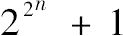
总是得出质数，因为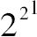
+1=5，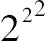
+1=17都是质数，他发现对于28+1和216+1，这个规律仍然是正确的，这个归纳结论是建立在几个算术实验上的，于是他认为这个结果是具有普遍性的．但是，他承认他并没有证明它．事实上，欧拉认识到对于232+1这个规律就不成立了，这个和为4，294，967，297，该数可以被64整除．通过归纳法，我们得出结论：如果各种各样的事件，例如（天体的）运动，恒定地呈现在人们面前，并且长期以来一直由一种简单的关系联系起来，它们将继续不停地服从于这种关系．由此我们可以得出结论：根据概率理论，这种关系不是因为偶然性，而是因为一个规则的原因．所以，月球的自转和公转运动的规则性、月球轨道与月球赤道的交点运动的规则性，这些交点的一致性、木星前三颗卫星的运动之间的奇特关系，据此，第一颗卫星的平均经度，减去第二颗卫星平均经度的3倍，再加上第三颗卫星平均经度的2倍，等于两个直角、潮汐之间的间隔时间与月亮通过子午线的时间的相同性、朔望时的最大潮与方照时的最低潮循环往复，所有这些事情，都一直保持着它们第一次被发现时的状态，这就以极大的概率表明了一些恒定原因的存在，几何学家们已成功地将之与万有引力定律联系起来，关于这些原因的知识又确保了这些关系的永恒性．
大法官弗朗西斯．培根（Francis Bacon），这位真正哲学方法的强力开创者，为了证明地球是不动的，他以一种非常稀奇古怪的方式滥用归纳法．在其最伟大的著作《新工具》（Novum Organum）中他如此论证道：“天体距离地球越远，它们从东向西的运动就越快．就一些天体而言运动会达到最快，土星会慢一点，木星会更慢一些，以此类推，直到月亮和最近的彗星．在大气层中，它（这种现象）仍然是可观测到的，特别是在两个回归线之间的热带地区，这是由于空气分子在那里描画出巨大的黄纬圈或黄经圈．最后，在海洋中，这几乎是观测不到的，对于地球而言它几近于零．”但是，这种归纳法证明了只有土星以及低于它的天体有其自身的运动，其方向与带动整个天球从东向西的真实的运动或者貌似真实的运动相反．这些运动看起来比更遥远的天体要慢一些，这种现象符合光学的规律．如果地球是静止不动的，那么这些天体为了实现每日的公转必须保持着令人难以置信的高速运动，培根本应该对此有所感受，而（地球的）自转以极其的简洁性解释了天体彼此之间是怎样相互远离的，正如恒星、太阳、行星、月亮那样，所有的似乎都受制于这种公转．至于海洋和大气层，他不应该将它们的运动与天体的运动相比较，这些天体与地球是分离开的；而大气和海洋是地球的一部分，它们就应该参与地球的运动或者静止．令人奇怪的是，培根，尽管其天赋引导他产生了一些伟大预想，但他却没有被哥白尼宇宙体系所提供的宏伟思想说服．然而，在伽利略的发现中，培根寻到了支持这个体系的一些强有力的类比，他遵循着伽利略的这些并将其持续地进行下去．他给出了寻求真理的规则，而不是个例；他极力倡导推理与雄辩的力量，坚持强调抛弃烦琐的经院哲学的必要性，其目标是致力于观察与实验，并指明了得到现象一般原因的正确方法．这位伟大的哲学家在其生活的那个辉煌世纪，为人类心智取得的巨大进步做出了贡献．
类比法是建立在概率的基础上的，相似的事件具有相似的原因并产生相同的效果．相似性越多，这个概率就越大．因此，我们毫不怀疑地断定，被赋予了相同器官的生物，就会做相同的事情，经历着相同的感觉，也被同样的欲望所驱使．与我们相似的动物具有类似于我们的感觉的概率仍然是非常大的，尽管相对于人类的个体来说，它们是低级一些，这一点已需要我们排除所有的宗教偏见，与一些哲学家一起思考动物只是机器这个问题．感情存在的概率随着与我们器官的相似度的降低而减小，然而，这个概率通常是很大的，即使对于昆虫而言也是如此．观察一下某些相同的物种，它们一代又一代，无须学习，精确地以相同的方式进行着非常复杂的活动，这会使人相信它们是通过一种亲和力而行动，这种亲和力类似于将晶体分子聚集在一起的那种力，但是，与附在所有动物组织上感觉一起，再加上化学组合的规律性，就产生了更加独特的组合，或许你可以将这种可选择的亲和力与感知力的混合物叫做动物亲和力（animal affinity），尽管在植物组织与动物组织之间存在着极大的类似，但是在我看来并不足以将这种意义上的情感推广到植物：当然，没有什么可以阻碍我们推广到它们．
因为太阳，通过其光和热的仁慈之举，给予地球上的动物和植物以生命，通过类比，我们可以断定它对其他行星也产生类似的影响；因为如此思考并不是自然的：有一种原因导致我们所见的行为以如此之多的方式发展，这个原因对于一个像木星一样大的星球应该是没有影响的，木星就像地球一样有其白天、黑夜和年份，对于它的观察表明了这些变化，那意味着存在非常活跃的力．但是，如果从这一点得出结论说这些行星上的居民与地球上的居民相似，那么就是将类比法推广得太远了．人类，适合于他所适应的温度，他所呼吸的空气，所有的迹象表明，他不能生活在其他星球上．但是，难道没有数不清的有机体系对应着这个宇宙中各种构成方式的星球吗？如果只是空气的成分和气候的差异导致如此多样的地球上的生物，那么各种行星和它们的卫星的成分和气候之间将会有多么大的差异啊！最活跃的想象力也无从想象，但是，它们的存在是很可能的．
力量强大的类比法引导我们将恒星看作为如此之多的太阳，就像我们的太阳一样，它们被赋予了一个引力，这个引力与它们的质量成正比，与它们距离的平方成反比．因为这个引力已被太阳系中的所有天体以及被最小的分子所证实，那么它似乎为所有的物质所具有．那些因为彼此离得很近而被称为双星的小恒星的运动表明了这一点．经过一个多世纪的精确观察，证实了它们彼此环绕着旋转，毫无疑问，它们处于相互的引力之中．
使我们将每颗恒星当作宇宙中心的类比法远不如前述的方法有力，但是，它却在已知的关于恒星和太阳形成的假说下而获得可能，因为在这个假说中，每一颗恒星，就像太阳一样，最初是由大量的气体所环罩，自然地就将相同的影响归因于这种大气层，并假设在大气层的塌缩中形成了行星和卫星．
科学中的大量发现归功于类比法，我将引述最引人瞩目的发现之一：大气电的发现，通过将电现象与打雷现象的类比而导致了这个发现．
引导我们寻找真理的最确切的方法在于通过归纳法从现象上升到法则，再将法则付诸实施．法则是将一些特殊现象联系在一起的关系：当起源于力的一般法则为人们所了解时，这个法则或者任何时候都可以被直接的实验所验证，或者经过我们探索它是否与已知的现象相吻合来验证它．如果通过严格的分析发现所有的情形都遵从这个法则，即使在其非常细微的细节中也是如此，如果再进一步，它们各式各样并且数目繁多，那么科学就获得了它可能具有的最高程度的确定性和完美性．这就是由于万有引力的发现而导致天文学中所发生的一切．科学的历史表明发现者们并不总是遵循缓慢而艰辛的归纳进程．（人类的）想象力迫不及待地要获悉原因，于是它就乐于构造假说，为了使事实与这种假说相吻合，想象力会经常曲解事实，在这种情况下，假说就是危险的．但是，为了发现规律，人们只是把这些假说作为将一些现象联系在一起的工具，避免将任何真实的属性强加于它们，此时，人们就会通过新的观察不断地修正它们，这样就有可能达到真正的原因，或者至少能够使我们在给定的环境下，从观察到的现象中推断出将会发生什么．
关于现象的原因，如果我们尝试着检验所有形成的假说，那么我们就会通过排除的过程而得到真理．这种方法已被成功地应用：有时我们已得到可以很好地解释所有已知事实的几个假说，对此学者们各持己见、哀莫一是，直到决定性的观察揭示出正确的一个．对于人类心智的历史，重温这些假说别有一番趣味，去看看它们是怎样成功地解释大量的事实的，以及为了和自然的历史相吻合，是怎样探究它们应当经历的变化的．正是如此，作为天体结构的唯一认知的托勒密体系转化为行星围绕太阳运转的假说，当我们使得均轮和本轮等同于或并行于太阳的轨道时，托勒密把它描述为年复一年的原因，但他并没有解决均轮和本轮的大小问题．那么，为了将这个假说转化为宇宙的真实系统，就必须在相反的意义上，将太阳的视运动转化为地球的运动．
通常情况下，将通过这些方法而获取的结果的概率计算出来几乎是不可能的，历史上的事实就是如此．然而，全部的解释现象或全部的证言有时是这种状况：如果不能够对概率做出评估，我们就不能合理地对其做出任何质疑．在其他情形下，唯有极其谨慎地接受它们才是明智的．
在一些最简单的赌博中，对于参与者来说，有利事件与不利事件之比长久以来已为人所知．人们根据这些比去决定所下的赌注或赌金的多少．但是，在帕斯卡尔和费马之前，计算这一类问题的原理和方法还不为人们所知，没有人能够解决这种复杂的问题．因此，我们必须将概率科学的基本原理归功于这两位伟大的几何学家，这是一个可以将之纳入为17世纪增光添彩的杰出事件之列的发现，17世纪是一个彰显人类心智所取得的最高荣耀的世纪．正如我们已知的那样，他们用不同的方法所解决问题的主要内容是：在参加者之间公平地分配赌注，假设这些参加者的技能是相同的并且同意在赌博结束之前终止．游戏的规则是先赢得一个给定点数的人就赢得这场赌博，赌博终止时每位参与者的点数是不相同的．显然应该按照参加者各自赢得这场赌博的概率的比例进行分配，这些概率由他们每人赢得赌注还缺少的点数来决定．帕斯卡的方法非常精巧，本质上只是将这个问题的偏差分方程应用于求解参与者们逐个赢输的概率，过程是从最小的点数开始至以后的点数，这个方法只限于两位参加者的情形．费马的方法则基于组合的基础，适用于任意多位参与者的情形．帕斯卡最初认为这个方法（费马的方法）仅限于两位参与者的情况，就像他自己的方法一样，这就引起了两个人之间的讨论，讨论的结果是帕斯卡承认了费马方法的一般性．
惠更斯汇总了已解决的各种问题，并在一个小册子中增加了一些新的问题，这本题为《论赌博中的推理》的小册子是关于这门学科的最早著作．从此，许多几何学家开始着手研究这门学科：著名的律师胡德（Hudde）、荷兰的维特（Witt）以及英国的哈雷（Halley）将概率的演算应用于人类寿命的研究，并最终发布了第一个死亡表．几乎与此同时，雅克比·伯努利向几何学家们提出了各种概率问题，随后他给出了解法．最后他完成了题为《测度术》的杰作，1706年，该书在他逝世后7年出版．与惠更斯的著作相比，该书对于概率科学的探讨更加深入，作者给出了组合与级数的一般理论，并且将该理论应用于关于偶然事件的几个难题之中．这部著作仍然引人关注之处在于其精确严密和新颖独特的观点——将二项式公式应用于这样一类问题中以及对以下定理的证明：如果无限地增加观察与实验的次数，那么不同性质的事件（数量）之比趋近于它们在其极限区间内的各自概率之比，其极限的区间将随着事件数量的增加而变窄，区间的长度可以小于任何给定的量．这个法则对于由观察获取现象的原因和定律极其有效．伯努利合乎情理地赋予了他的证明以极大的重要性，据他自己说，他对此已经深思熟虑了二十年．
从雅克比·伯努利去世到他的著作出版这一段时间，蒙特莫特（Montmort）和棣莫弗（De Moivre）发表了两篇关于概率演算的论文．蒙特莫特的论文题目为《赌博的风险分析》，它包括了这种演算在各种赌博游戏中的大量应用．作者在第二版中增加了几封信，其中丹尼尔·伯努利给出了几个困难问题的独具匠心的解法．稍晚于蒙特莫特，棣莫弗的论文首次发表于1711年的《哲学杂志》（transactions philosophiques）上，随后，作者就将之单独出版，在其后的第三版中他成功地改进了它．这部著作主要建立在二项式公式的基础上，其包含的一些问题解法具有最大程度的一般性．然而，其最引人瞩目的特点是循环级数的理论及其在这个主题中的应用．这个理论是关于常系数线性有限差分方程的积分的，棣莫弗用一个非常令人满意的方法得到了这个积分．
棣莫弗在他的著作中，又重新讨论了关于由大数次观察所得到的结果的概率的雅克比·伯努利的定理．他并没有满足于展示必然发生的事件之比不断地趋近于它们各自的概率之比，就像伯努利所做的那样．另外，对于这两个比之差位于给定极限之间的概率，他给出了一个优美而简单的表述．为此，他求出了一个次数非常高的二项式的展开式的最大项与其所有项之和的比，以及最大项与其临近项之差的双曲对数．
这个最大项就是很多因子的乘积，对于它的数字计算是不可能进行的．为了通过收敛逼近得到它，棣莫弗使用了斯特林关于高次幂二项式的中项的理论，这是一个引人瞩目的理论，特别是将
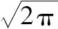
（周长与半径之比的平方根）引入一个似乎与这个超越数没有任何关系的展开式中．此外，棣莫弗本人深深地为这个结果所吸引，斯特林从周长的表达式中推导出无限个数的乘积的这个公式[36]，沃利斯也通过一种奇特的分析得到了这个公式，这种分析包含了如此有趣且有效的定积分理论．许多学者已收集了大量的关于人口、出生、结婚和死亡率的精确数据，其中我们应该提及这些人：Deparcieux，Kersseboom，Wargentin，Dupré de Saint-Maure，Simpson，Sussmilch，Messène，Moheau，Price，Bailey和Duvillard.他们已经给出了有关年金、保险等等方面的一些公式和表格．但是在这个简短的浏览中，我只能够提到这些有益的工作以便使之与起初的思想相吻合．在这些数中，特别要提到的是数学期望与道德期望，以及丹尼尔·伯努利为了分析后者已给出的独特的法则．如此他又一次令人满意地将概率演算应用于接种．尤其应该提及的是在这些最初的思想中从已观察到的事件中得到的对于事件的可能性的直接思考．雅克比·伯努利和棣莫弗假设这些可能性是已知的，并寻求未来实验的结果将越来越接近于它们的概率．贝叶斯在1763年的《哲学杂志》上直接寻求由过去的经验所显示的可能性包含在给定的极限之中的概率，他已用一种精致与独特的方法做到了这一点，尽管这种方法有些令人费解．这个问题与原因的概率以及从已观察的事件推导出的未来事件的概率理论紧密相连，若干年后，我注意到那些在被假设为等可能性的偶然事件中可能存在的不等性的影响，借此我解释了这个理论的法则．尽管人们还不知道这些不相等性对哪些简单的事件有利，然而这种无知本身却常常使得复合事件的概率增加．
通过对于分析和概率问题的概括和总结，我得出了偏有限差分的计算，对此，拉格朗日已用一种非常简单的方法处理过，他已将这种方法完美地应用于这类问题中．几乎与此同时，我发表的生成函数的理论包括了这些主题，除此之外，它本身以最大的概括性适用于一些最困难的概率问题．经过极快的收敛逼近，还可以进一步求出包含大量项与因子的函数的一些值，由此可见周长与半径之比的平方根非常频繁地出现于这些值之中，这表明了无数其他的超越数也有可能被引入．
证言、投票、选举人和审议人的集体的决定，以及法庭的判决都已经被划归于概率的演算．如此之多的情感、各种各样的利益和环境使得与这个领域有关的问题更加复杂，以至于它们几乎通常是不可能解决的．但是，对于一些类似于它们的非常简单问题的解决时常可能会为一些困难和重要问题的解决提供一些线索，计算的确定性使得这个程序比那些相当似是而非的推理更好．
概率演算最有趣的应用之一是在观察的结果中必须选出的平均值．许多几何学家已经对这个问题进行了研究，拉格朗日在《都灵学报》发表了一个漂亮的方法，这是一个在观察误差的定律已知时求这些平均值的方法．为了同样的目标，我已给出基于一种独特设计的方法，这种设计可以有效地用于分析学的其他问题中，在函数的冗长计算的整个过程中，如果允许无限地延长，根据问题的性质，这些函数应该是有界的，这一点表明因为这些有界性，最后结果的每一项都应该借助于这些极限而得以修正．我们已经看到每一次观察都给出了一个一次条件方程，这个方程可以这样安排：其所有的项位于方程的左边，方程的右边为零．这些方程的使用是天文表中精确性显著提高的主要原因之一，因为在求它们的元素时，我们已经能够同时进行大量漂亮的观察．当只有一个元素待求时，寇次（Côtes）已规定那些条件方程应以这样的方式安排：每个方程中这个未知数的系数必须是正的，将所有这些方程相加以形成一个最终方程，从中就可以求出这个未知数的值．寇次的法则已被所有的计算者所遵循，但是，由于并不能够求出几个未知数，所以没有固定的法则来组合这些条件方程以获取所需的最终的方程：但是对于每一个未知量必须选择最适于求它的观察．为了消除这一系列的困难，勒让德和高斯想到一个方法：将条件方程左边的平方相加，将其中的每一个未知量当作变量，使得这个和达到最小值，以这种方式就可以直接获得与未知量的个数一样多的最终方程．但是，从这些方程所求得的值是否比用其他方法所得到的值要更加优越呢？这个问题单单由概率的计算就可以给出答案．因此，我将其应用于这个课题中，并通过精密的分析而得到了一个包括前述方法的法则，这进一步增加了根据常规步骤获取（未知）量的优越性，这种优越性将由给出最显著证据的所有观察以及将令人担忧的误差降低到最低的可能的求值而显现出来．
然而，我们只是具有所得结果的不完善的知识，只要影响它们的误差定律还是未知的，我们就必须能够求出这些误差位于给定区间中的概率，这实际上就是求出我称之为一个结果的权数的东西．为此，分析学给出了一些一般和简单的公式．我已将这种分析应用到大地观测的一些结果中．一般的问题在于求出大量观测误差的一个或多个线性函数的值位于给定区间中的概率．
观测误差可能性的定律将一个常数引入这些概率的表达式中，这个常数有赖于关于这个通常未知定律的知识．幸运的是这个常数可以从观察中得到．
求解天文学问题的主要方法是求出每次观测的结果与计算结果之差的平方之和．由于同等可能的误差与这个和的平方根成正比，那么，通过比较那些平方数，就可以估计同一个星体的各种数表的相对精确性．在测地学的操作中，那些平方数被每个三角形内角之和的观测误差的平方所代替．对于这些误差的平方进行比较将使我们能够判断用来测量角度的仪器的相对精确性．通过这个比较可以看到在测地学中，经纬仪的优势超过了被它替代的仪器．
在观察中通常存在着多个导致误差的根源：例如，星体的位置是由经度仪和纬度仪求出的，两者都易出现误差，这些误差的概率法则也不能被想当然地认为是相同的，从它们的位置推出的一些量也会受到这些误差的影响．求这些量的条件方程包括了每个仪器的误差，它们有不同的系数．应该用这些因数的最优系统分别乘以这些方程，因此，通过将这些积进行组合，就可以获得与所要求解的量一样多的最终方程，这个最优的因数系统就不再是每个条件方程中那些（未知）元素的系数系统．无论可能有多少误差的原因，我所用的分析学可以非常容易地导出能够给出最优结果的因数系统，或者说在这些结果中相同的误差比在其他任何系统中出现的可能性小．同样的分析方法也会导致这些结果的误差概率的定律．这些公式包含了与误差的原因同样多的未知常数，它们（这些常数）取决于这些误差的概率定律．已经看到，在单一原因的情况下，这个常数可以通过以下方式求出：当用所发现的值替代（未知）量时，构成每一条件方程的残差的平方之和．一般地，用类似的过程给出这些常数的值，无论常数的个数有多少，这种方法使概率演算在观察结果中的应用得以完善．
在这里，我应当给出一个重要的说明．对于我刚才谈到的常数的值，当观察的次数不是非常大时，观察所造成的微弱的不确定性也会引起用这种分析所求得概率的相应不确定性．但几乎足以知道观察结果中的误差被包含在很狭小的范围之中的概率是否非常接近于1；如果并非此种情形（这个概率不接近于1）时，为了获取一个概率使其满足不再对有关结果的正确性存有合理的疑问，也足可以使人们知道还需要再进行多少次观察．概率的分析公式完全满足了这个要求，在这一方面，它们可以被视为建立在总体观察基础上的易谬科学的必要补充．在解决自然和道德科学中的大量问题时它们同样是不可或缺的．现象的规则因最常见的几种情况是：或者不为人所知，或者是因为太复杂而难以划归为计算，更通常的情况是它们的作用经常受到意外的和不规则因的干扰：但是它通常会在由所有这些原因所导致的事件上留下印迹，并且它也会产生一些调整，这些调整只有经过大量的观察才能确定．概率的分析解释了这些调整：它确定这些原因的概率，并且表明了不断增加这个概率的方法．所以在影响大气的不规则的原因当中，太阳温度从白天到黑夜、从冬天到夏天的周期性变化在这个巨大的流体团的压力中以及相应的气压计高度中就导致了每日和每年的振荡，大量的气压观察已揭示出前者的概率至少等于我们认为是确定事实的概率．在对群体的多种情感和各种利益产生影响的所有因素中，一系列的历史事件再次向我们显示了崇高道德法则的恒定作用．因此，这门起源于赌博游戏的科学理应被提升至最重要的人类知识领域之列．
我在《概率的分析理论》中收集了所有这些方法，其中我尝试用最一般的方式阐述概率演算的原理和分析，同样也论述了这种演算为一些饶有趣味但却困难重重的问题所提供的解法．
综上所述，概率论归根结底就是将常识划归为计算：它使我们能够精确地理解和评估思维缜密之人通过某种本能可感觉到但又常常不能说出一个理由的东西．它没有为观点的选择和决策的制定留下任何的随意性，通过这种工具，人可以做出最有利的选择．因此，它最有效地弥补了人类心智的盲点和弱点．让我们思考一下这些方面：由这个理论所产生的分析方法、作为基础而起作用的规则的真理性、在问题解决中应用它们所需要的精密而细致的逻辑、建基于其上的公共福利事业、通过应用于最重要的自然科学和道德科学问题它已获得的拓展和即将获得的拓展，如果我们再想一想那些甚至不能化归于计算的事情，它会提供最可信的线索以引导我们的判断，它教导我们避免经常误导我们的谬误．我们由此看到，没有一门学科比它更值得我们思索探究，没有一门更有用的学科比它值得纳入到我们的公共教育系统中．
（上海师范大学 王幼军 译）
[1]P（E1∩E2）=P（E1）P（E2）
[2]P（E1∩E2）=P（E1）P（E2E1）
[3]P（E2E1）=P（E1∩E2）P（E1）
[4]P（CiE）=P（ECi）∑jP（ECj）
[5]P（E2E1）=
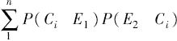
，其中，E1表示观察到的事件，E2表示未来的事件．[6]这个原理是指求数学期望的一般法则公式：E（x）=
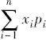
[7]这里讨论的问题是“圣．彼得堡悖论”（The St.Petersburg Paradox）.
[8]即（1+a1）（1+a2）（1+a3）·…·（1+an）.
[9]即
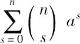
=（1+a）n.[10]即
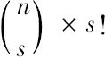
=n（n-1）·…·（n-s+1）.在《概率的分析理论》中，拉普拉斯将该公式表示为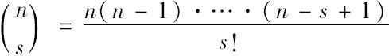
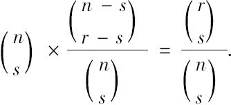
.拉普拉斯在此处出现一个错误，前一句中的n-s显然应为r-s.[12]即pn=
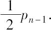
[13]即=
[14]即pm，n=
[15]这里指含n个非独立下标（或者说变量）和任意个独立下标的n阶偏有限差分方程．
[16]假设V（t）=∑axtx，则（1+2t）V（t）=∑x（ax+2ax-1）tx，且φ（1）（x）≡ax+2ax-1就是原函数φ（x）≡ax的导函数．如果还有（1+2t）V（t）=∑bxtx，那么就有数列（bx）=（ax+2ax-1）.
[17]如果差分方程是这种形式：f（ax+n，ax+n-1，...，ax）=0，那么就用1替换ax+n，t替换ax+n-1，t2替换ax+n-2，等等．
[18]Subsecant是割线与x轴的交点到第一个交点的纵坐标的距离．
[19]如果令y=f（x）⇒y+Δy=f（x+Δx），
则
[20]即
[21]即
[22]即a-n=
[23]即lnex=x.
[24]P{θ1＜X＜θ2}=，其中，k为常数，n为观察的次数．
[25]P{α<x<β}=，其中h2为拉普拉斯所说的权，，其中σ2表示方差．
[26]由可以推出：
[27]这里大概是说，权h2与成正比．
[28]即最小二乘法．
[29]冲（opposition）：由地球上看到外行星或小行星与太阳的黄经相差180°的现象；方照（quadrature）：由地球上看到外行星或小行星与太阳的黄经相差90°的现象．
[30]指帕斯卡赌注．
[31]用符号表示为：V=S·p·（1+i）-n，其中S是总的年费，p是若干年后可以支付的概率，i是利率，n是年数．
[32]在这里，用一般的寿命表的符号可以表示为公式：5Ex=，其中S为总年费，为此处所讲的概率．
[33]拉普拉斯此处提及的应该是康熙时代来华的传教士闵明我（Philippe-marie Grimaldi，1639—1712），康熙曾任命闵明我为钦天监监正．
[34]假如用t表示这个变量，则这个分数的表达式为
[35]原文此处或许有误，应为2/3.
[36]n!≈——斯特林-棣莫弗公式．